Zpravodajství o národním hráčském fondu · veřejná data · reprodukovatelné
Atlas hráčského fondu
Pohled na profesionální fond jedné země v kvalitě pro federaci: jak si stojí proti peer zemím, kde je děravá cesta do zahraničí, jak je poskládaná turnajová nominace a jak vypadá sezóna každého hráče proti evropskému korpusu.
19 lig · 7 sezón · 285 testů · každé číslo dopočítané za běhu · rozhodnutí zalogovaná · žádné predikce, žádná nominační doporučení
Zpravodajství o národním hráčském fondu · veřejná data · reprodukovatelné
Jak hluboký je národní hráčský fond — a proč
2,39*hráčů v 9 nejsilnějších ligách Evropy na milion obyvatel, soupisky 2025/26
Pohled na profesionální fond jedné země v kvalitě pro federaci: jak si stojí v přepočtu na obyvatele proti peer zemím, kde je děravá jeho vývojová cesta, jak je poskládaná jeho turnajová nominace a jak vypadá sezóna každého hráče proti evropskému korpusu.
Souvislosti
Největší kohortová mezera: záložníci 23-25 — 2 hráčů Česka v top-9 ligách proti peer mediánu 6.
Nedávný český export se poprvé dostal na soupisku top-9 ligy v mediánovém věku 22; hráč z země Dánsko v 22.
Postaveno na FBref, Wikipedii a Wikidatech. Česko je pracovní příklad; pipeline bere kód národnosti a sadu peer zemí. Lidé z fotbalu tato čísla znají hráč po hráči; agregovaná na jednom místě nejsou nikde.
* 26 hráčů s národností CZE podle FBref a alespoň 450 minutami na soupiskách 2025/26 top-9 lig UEFA ÷ 10,9 mil. obyvatel (Eurostat 2024); peer země počítány stejně. Metodologie.
Vše níže je důkazem pro tato čtyři čísla, v jedenácti otázkách.
Pojmy použité na této stránce jsou vysvětlené ve slovníčku pojmů.
Proč vlak odjel
Pět čísel, v pořadí, jak na sebe navazují, ukazuje, kde je fond hráčů dostupných pro reprezentaci nejtenčí. Každé je uvedeno pro český fotbal i pro dvě země, které report používá jako srovnání všude jinde; každé odkazuje na část reportu s celým důkazem.
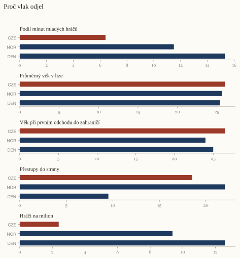
Každá příčka je jedna fáze na vlastní škále: plný bod je Česko, prázdné body dvě srovnávané země, u každého jeho hodnota.
Hráči v nejsilnějších ligách Evropy na milion obyvatel
CZE 2,39NOR 9,37DEN 12,58
Kolem sezóny 2014/15 model nachází možný zlom v počtu čeští hráčů v nejsilnějších ligách Evropy, s 62 procent pravděpodobností, že jde o skutečnou změnu, ne jen o běžný výkyv mezi sezónami. Zlom a prognóza.
Pokud si z tohoto máte odnést jednu věc: jediné měřené spojení, které nese většinu rozdílu, je pro každé srovnání jiné — u země Norsko je to jak silná je domácí liga, u země Dánsko kolik herního času dostávají mladí hráči doma.
Co tohle neukazuje
Peníze: transferové částky, mzdy a rozpočty akademií nejsou součástí žádného čísla výše.
Jak akademie a trenérská práce skutečně fungují den co den — to žádný veřejný datový zdroj použitý zde nevidí.
Agenty a to, jak se odchod do zahraničí skutečně domlouvá — to se odehrává mimo jakoukoli tabulku, kterou tento pipeline umí číst.
Směr šipky: nízký podíl herního času mladých hráčů doma může tenkou generaci spoluzpůsobovat, stejně dobře ale může být jejím příznakem — pět čísel výše jsou souvislosti měřené stejným způsobem pro každou zemi.
Jak hluboký je fond?
Další tři otázky počítají, kdo je ve fondu a kde je ho nejméně.
Je český fond tenký?
Jako analytická otázka V číslech: hráči s alespoň 450 minutami na soupiskách 2025/26 v 9 nejsilnějších ligách, na milion obyvatel, oproti 9 peer zemím.
Co jsme udělali Spočítali jsme každého hráče s národností domácí země, který tu sezónu skutečně hrál v jedné z nejsilnějších lig Evropy, a ten počet vydělili počtem obyvatel země.
Česko je 7. z 9 zemí s 2,39 na milion; Dánsko vede s 12,58.
DEN
Dánsko
12,58
CRO
Chorvatsko
12,18
NOR
Norsko
9,37
SUI
Švýcarsko
6,03
AUT
Rakousko
4,80
SVK
Slovensko
3,14
CZE
Česko
2,39
HUN
Maďarsko
1,57
POL
Polsko
1,23
Jak to víme Odlišní hráči s aspoň 450 minutami na soupiskách 2025/26 v 9 nejsilnějších ligách ÷ populace (Eurostat 2024); každá země počítána stejně.
Federace by sledovala pohyb pořadí na milion obyvatel napříč sezónami, ne číslo jednoho roku.
Kde přesně?
Jako analytická otázka V číslech: počet čeští hráčů oproti mediánu peer zemí, podle věkové kohorty a herního postu, alespoň 450 minut, sezóna 2025/26.
Co jsme udělali Rozdělili jsme hráče do postových skupin a věkových pásem, spočítali, kolik jich domácí země má v každé skupině, a ten počet porovnali se střední hodnotou mezi ostatními zeměmi.
Největší kohortová mezera: Záložníci 23-25, 2 hráčů Česka proti peer mediánu 6.
Skupina
Kohorta
CZE
Peer medián
Záložníci
23-25
2
6
Záložníci
26-29
3
6
Záložníci
30+
1
3,5
Obránci
26-29
3
4,5
Obránci
U22
0
1,5
Jak to víme Věk na začátku sezóny; kohorty U22 / 23–25 / 26–29 / 30+; aspoň 450 minut.
Federace by sledovala, která kohortová mezera se napříč sezónami zužuje nebo rozšiřuje, ne jen dnešní snímek.
Kde uniká cesta?
Odtud otázky sledují hráče přes minuty mládeže doma, přesun do zahraničí a jak tento přesun dopadá.
Dostávají mladí minuty doma?
Jako analytická otázka V číslech: podíl minut domácí ligy odehraných hráči do 21 let na začátku sezóny, 2025/26, podle nejvyšší soutěže každé země.
Co jsme udělali Spočítali jsme každou odehranou minutu v lize a podívali se, kolik jich připadlo hráčům do 21 let.
Podíl minut domácí ligy pro hráče do 21 let: Česko 6,4 %, nejlépe Dánsko 15,3 % (nejlepší peer). Napříč 8 zeměmi (zemní průměry za obě sezóny) odpovídá 10 bodů podílu do 21 let nárůstu +10,11 hráčů na milion v top-9 ligách (−1,69–23,26).
DEN
DEN-Superliga
15,3 %
HUN
HUN-NB I
14,1 %
CRO
CRO-HNL
14,0 %
NOR
NOR-Eliteserien
11,5 %
AUT
AUT-Bundesliga
9,3 %
POL
POL-Ekstraklasa
9,3 %
SUI
SUI-Super League
7,7 %
CZE
CZE-First League
6,4 %
SVK
SVK-Super Liga
—
Napříč zeměmi
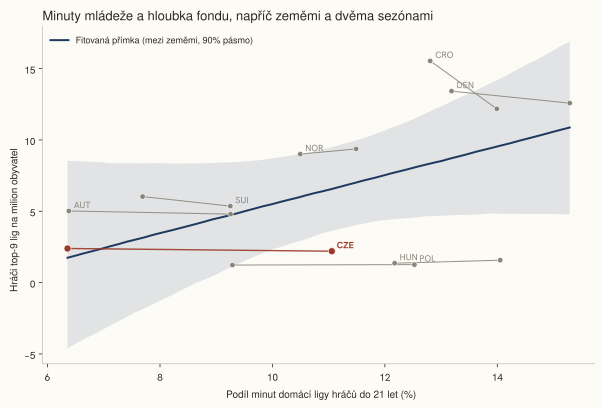
Jak to víme Podíl všech ligových minut odehraných hráči do 21 let na začátku sezóny, 2025/26, podle domácí nejvyšší soutěže.
Federace by sledovala podíl U21 sezónu po sezóně, ne počet exportů.
Kam čeští hráči odcházejí?
Jako analytická otázka V číslech: úroveň cílové ligy u 2025/26 řádku každého hráče způsobilého za Česko, rozdělená na top-9, do strany a jiné přestupy.
Co jsme udělali Podívali jsme se, kde každý oprávněný hráč tu sezónu skutečně hrál, a zařadili ho podle toho, jak silná je ta liga ve srovnání s hráčovou vlastní domácí ligou.
27 z 192 hraje v zahraničí; 63 % v 9 nejsilnějších ligách, 19 % přešlo do strany (do ligy, která není silnější než česká).
17
top-9 medián násobičky 0,666
63 %
10
liga peer země medián násobičky 0,365
37 %
Jak to víme Cílová liga poslední sezóny 2025/26 každého hráče s příslušností Česka; do strany = násobička cíle ≤ násobička české ligy (síla ligy: dva odhady, § Metodologie).
Federace by sledovala podíl přesunů do strany v čase, ne pouhý počet hráčů v zahraničí.
Stojí pozdější odchod něco?
Jako analytická otázka V číslech: průměrná ligově upravená produkce (góly + asistence na 90 minut) za první dvě sezóny v top-9 jako funkce věku při první z nich, dáno silou výchozí ligy a postem, 115 exportů peer národností.
Co jsme udělali Podívali jsme se na věk, kdy hráč poprvé přišel do jedné z nejsilnějších lig, a ověřili, jestli hráči, kteří přišli dřív, nakonec produkovali víc, po zohlednění síly ligy, ze které přišli.
Hráči, kteří se do top-9 dostanou v 21 letech, produkují 0,14 (0,13–0,16) ligově upravených G+A na 90 minut za první dvě sezóny; ti, kdo dorazí ve 24, 0,14 (0,12–0,16) — rozdíl +0,001 (−0,011–0,013), interval zahrnuje nulu: při n = 115 žádný zjistitelný rozdíl. České exporty odcházejí v mediánovém věku 23.
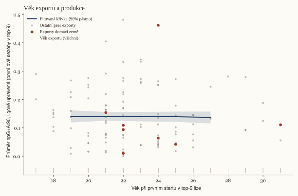
Srovnání 21 vs 24 vyznačené přímo na křivce.
Jak to víme Věková křivka (kvadratická funkce) ligově upravené produkce, dáno silou výchozí ligy (§ Metodologie), postem a efektem země, 115 exportů peer národností (Gelman et al., 2013; Hoffman and Gelman, 2014); lepší hráči obvykle odcházejí dříve, takže křivka mísí selekci s vývojem a tento report je neodděluje.
Federace by sledovala, jak se křivka věku exportu posouvá mezi kohortami, ne výsledek jednoho hráče.
Jak se jim tam daří?
Jako analytická otázka V číslech: mediánový podíl klubových minut sezóny 2025/26 u hráčů v zahraničí, podle země původu.
Co jsme udělali Zjistili jsme, jaký podíl herního času klubu hráč skutečně dostal a kde ten klub tu sezónu stál ve vlastní ligové tabulce střelců.
České exporty mají medián 50 % minut svého klubu (3. z 9).
Sezóna Chance Liga se přepočítává na 0,67 sezóny Premier League podle modelu transferového grafu (0,59–0,75), oproti 0,43 podle koeficientu UEFA.
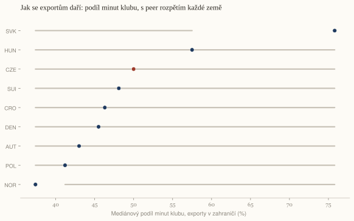
České exporty oxbloodově; hodnota každého řádku u jeho bodu.Čísla po jednotlivých zemích
Federace by sledovala, jestli si export udrží podíl minut i po první sezóně, ne jen medián.
Co se dostane do reprezentace?
Poslední úsek se dívá na to, kdo je skutečně nominován, a kdy se dveře do největších lig otevřely a zavřely.
Z čeho je postavená nominace na MS?
Jako analytická otázka V číslech: ligová úroveň u řádku s nejvíce minutami sezóny 2025/26 každého hráče soupisky 2026 FIFA World Cup, spárováno podle jména a roku narození, po zemích.
Co jsme udělali Spárovali jsme každého jmenovaného hráče nominace s jeho klubovou sezónou a zaznamenali, na jaké úrovni ligy skutečně hrál.
35 % nominace 2026 FIFA World Cup hraje v 9 nejsilnějších ligách; Švýcarsko 88 %.
Top-9 %
Odrazová %
Domácí %
Jiná %
Vladimír Coufal
LHLukáš Horníček
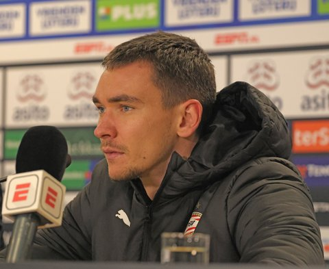
Matěj Kovář
Ladislav Krejčí
RHRobin Hranáč
Tomáš Souček
Patrik Schick
Pavel Šulc
Adam Hložek
Vladimír Darida
LCLukáš Červ
LPLukáš Provod
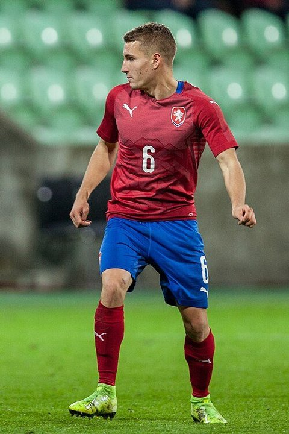
Michal Sadílek
Tomáš Holeš
Tomáš Chorý
SCŠtěpán Chaloupek
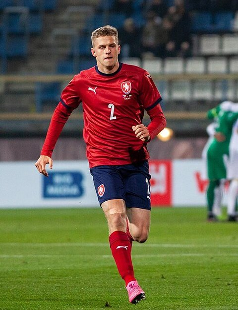
David Zima
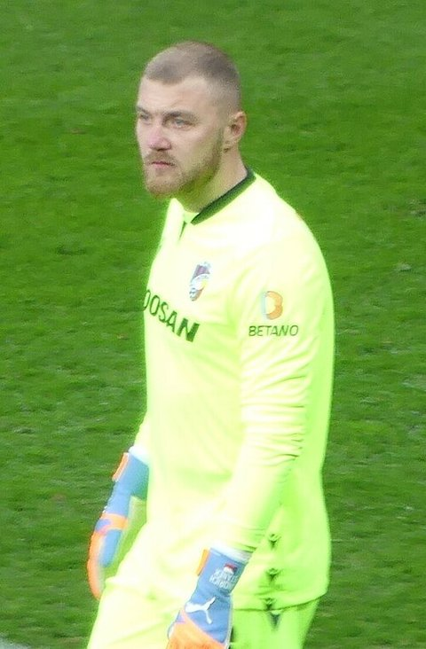
Jindřich Staněk
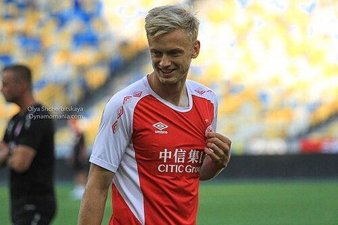
Jaroslav Zelený
DVDenis Višinský
Jan Kuchta
MCMojmír Chytil
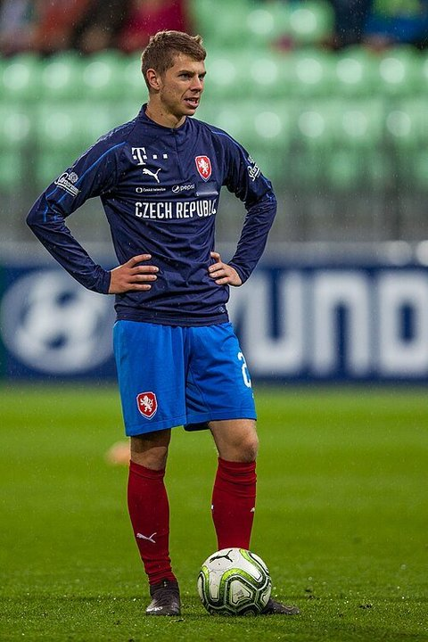
David Douděra
DJDavid Jurásek
ASAlexandr Sojka
HSHugo Sochůrek
Odkud jsou peer země
Top-9 %
Odrazová %
Domácí %
Jiná %
CZE Česko
Soupiska 26
35 %
SUI Švýcarsko
Soupiska 26
88 %
CRO Chorvatsko
Soupiska 26
73 %
AUT Rakousko
Soupiska 26
69 %
NOR Norsko
Soupiska 26
65 %
Jak to víme Soupisky z Wikipedie spárované s ligovými řádky sezóny 2025/26; úroveň = liga řádku s nejvíc minutami.
Federace by sledovala skladbu úrovní budoucích nominací napříč cykly, ne snímek jednoho turnaje.
Kdy vlak odjel?
Jako analytická otázka V číslech: čeští hráči s alespoň 450 minutami v ligách Big-5 každou sezónu od 2020/21, s jedním datovaným zlomem.
Co jsme udělali Sezónu po sezóně jsme spočítali, kolik hráčů domácí země skutečně hrálo v pěti největších ligách Evropy, a hledali sezónu, kdy se ten počet natrvalo změnil na jinou úroveň.
Čeští hráči s aspoň 450 minutami v ligách Big-5 vyvrcholili na 26 v sezóně 2007/08, klesli na 6 v 2015/16, 10 v 2025/26; zlom je datován do sezóny 2014/15 (62 % posteriorní pravděpodobnost), změna úrovně o ×0,57 (0,38–0,86).
Čeští hráči oxbloodově; peer země šedě, dvě z nich popsané přímo v grafu.
Jak to víme Sezónní tabulky hráčů Big-5 z FBref 2000/01 → 2025/26; peer země podle stejného pravidla; jména jsou čeští hráči s nejvíc minutami z každé vrcholné sezóny včetně brankářů — sestava přítomnosti, ne žebříček kvality: 2007/08: Jaroslav Drobný, Jaroslav Plašil, Radim Kučera; 2002/03: Petr Čech, Jan Koller, David Jarolím; 2005/06: David Rozehnal, Tomáš Ujfaluši, Petr Čech. Datum zlomu pochází z bayesovského modelu lokální úrovně s jedním bodem zlomu (Adams and MacKay, 2007); podrobnosti v § Metodologie.
Federace by sledovala, jestli úroveň po zlomu vydrží i další sezónu, a nebrala jeden zlom jako konečný.
Jak to dělají Norsko a Dánsko?
Jako analytická otázka V číslech: Norsko, Dánsko a Česko na stejných šesti definicích cesty do 9 nejsilnějších lig, stejné sezóny.
Co jsme udělali Porovnali jsme domácí zemi se dvěma srovnávacími zeměmi na šesti číslech, z nichž každé je definované a měřené úplně stejně pro všechny tři.
Na stejných šesti číslech dává Norsko hráčům do 21 let 12 % domácích minut proti 6 % a posílá 65 % nominace do 9 nejsilnějších lig proti 35 %.
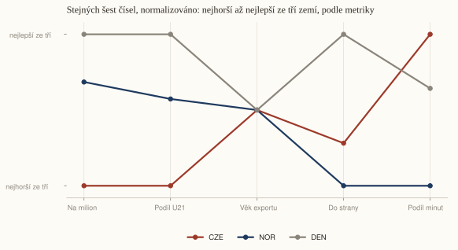
Kódy zemí popsané na obou koncích každé linky; bez legendy.Šest čísel, nepřeškálovaných
Metrika
CZE
NOR
DEN
Hráči na milion
2,39
9,37
12,58
Podíl domácích minut U21
6,4 %
11,5 %
15,3 %
Věk exportu (nedávní)
22
22
22
Přesuny do strany
19 %
22 %
10 %
Podíl klubových minut exportů
50 %
37 %
46 %
Nominace na MS v top-9 ligách
35 %
65 %
—
Hráči v Big-5 teď
10
25
38
Jak to víme Stejné definice, stejné sezóny; srovnání, ne kauzální tvrzení. Každá metrika je pro graf výše přeškálována na 0-1 napříč třemi zeměmi, směr zvolen tak, že 1,0 je vždy otevřenější cesta (více hráčů na milion, více minut do 21 let, dřívější věk exportu, méně přesunů do strany, větší podíl minut v zahraničí, více nominace v top-9 ligách); tabulka níže má syrová čísla.
Federace by sledovala, které z šesti čísel se pohne jako první, ne jen celkový obrázek.
Jdou brankáři jinou cestou?
Jako analytická otázka V číslech: čeští brankáři s alespoň 450 minutami v top-9 ligách, na milion obyvatel, oproti věku exportu hráčů z pole.
Co jsme udělali Brankáře jsme počítali stejným způsobem jako hráče v poli a pak porovnali věk, kdy se každá skupina poprvé dostala do jedné z nejsilnějších lig.
4 čeští brankáři hrají aspoň 450 minut v top-9 ligách (0,37 na milion, pořadí 5 z 9); v nich se poprvé objevili v mediánovém věku 22,5, oproti 23 u exportů z pole — dříve než exporty z pole.
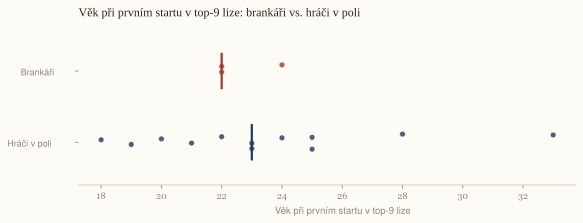
Klubová úroveň: čeští brankáři v top-9, 2025/26
Hráč
Klub
Liga
Minuty
Percentil vstřelených gólů klubu
Lukáš Horníček
Braga
POR-Primeira Liga
2959
83 %
Matej Kovar
PSV
NED-Eredivisie
2790
100 %
Vitezslav Jaros
Ajax
NED-Eredivisie
1710
83 %
Antonín Kinský
Tottenham
ENG-Premier League
630
42 %
Produkce brankářů: čeští brankáři, 2025/26
Hráč
Klub
Liga
Minuty
Obdržené góly/90
Zákroky/90
Úspěšnost zákroků
Podíl čistých kont
Obdržené góly/90, kvalitativně upravené
Antonín Kinský
Tottenham
ENG-Premier League
630
1,00
1,43
65,9 %
29 %
1,21
Vitezslav Jaros
Ajax
NED-Eredivisie
1710
1,21
3,26
68,3 %
26 %
2,62
Matej Kovar
PSV
NED-Eredivisie
2790
1,32
2,74
67,8 %
23 %
2,71
Lukáš Horníček
Braga
POR-Primeira Liga
2959
1,00
2,19
66,6 %
36 %
1,70
Martin Jedlička
Baník Ostrava
CZE-First League
1440
1,50
3,12
67,5 %
31 %
3,19
Michal Reichl
Bohemians 1905
CZE-First League
1990
1,40
2,89
67,5 %
22 %
3,09
Hugo Jan Bačkovský
Dukla Prague
CZE-First League
1260
1,29
3,36
67,8 %
21 %
2,88
Stanislav Dostál
Fastav Zlín
CZE-First League
2700
1,47
3,03
67,4 %
30 %
3,23
Jan Hanuš
Jablonec
CZE-First League
2326
1,20
2,24
67,2 %
42 %
2,77
Aleš Mandous
Mladá Boleslav
CZE-First League
720
3,12
2,75
66,4 %
0 %
4,74
Jiří Floder
Mladá Boleslav
CZE-First League
2250
1,20
2,92
67,8 %
36 %
2,77
Aleš Mandous
Pardubice
CZE-First League
480
1,50
2,81
67,4 %
0 %
3,01
Jan Koutny
Sigma Olomouc
CZE-First League
2766
1,20
2,77
67,7 %
29 %
2,77
Jakub Markovič
Slavia Prague
CZE-First League
1317
0,55
1,71
67,8 %
53 %
1,87
Jindřich Staněk
Slavia Prague
CZE-First League
1710
1,05
2,11
67,4 %
32 %
2,55
Tomáš Koubek
Slovan Liberec
CZE-First League
2970
1,09
2,73
67,9 %
33 %
2,57
Jiří Borek
Slovácko
CZE-First League
540
1,67
3,33
67,4 %
33 %
3,17
Milan Heča
Slovácko
CZE-First League
2250
1,40
3,04
67,6 %
24 %
3,10
Matouš Trmal
Teplice
CZE-First League
3060
1,24
2,94
67,9 %
32 %
2,83
Martin Jedlička
Viktoria Plzeň
CZE-First League
1274
1,41
2,90
67,5 %
27 %
3,06
Viktor Baier
Blau-Weiß Linz
AUT-Bundesliga
1530
1,71
3,06
65,9 %
18 %
5,82
Adam Stejskal
WSG Tirol
AUT-Bundesliga
2790
1,65
2,13
65,0 %
23 %
5,84
Medián kvalitativně upravených obdržených gólů/90 u peer zemí:
CZE 2,86 · SVK 2,90 · AUT 4,76 · HUN 5,29 · POL 2,74 · CRO 5,19 · DEN 3,69 · SUI 4,95 · NOR 4,01
Brankáři na milion obyvatel podle zemí
DEN
Dánsko
0,67
CRO
Chorvatsko
0,52
SUI
Švýcarsko
0,45
SVK
Slovensko
0,37
CZE
Česko
0,37
POL
Polsko
0,19
NOR
Norsko
0,18
AUT
Rakousko
0,11
HUN
Maďarsko
0,10
Jak to víme Práh 450 minut, soupisky 2025/26, stejné stahování K = 900 jako zbytek reportu; první sezóna ve stažené top-9 tabulce; hráči, kteří v ní byli už v 2020/21, jsou cenzurovaní — 0 % brankářů, 21 % exportů z pole; srovnání dvou cest v rámci jednoho národa, ne kauzální tvrzení.
Federace by sledovala, jestli se cesta brankářů dál odchyluje od věku exportu v poli, ne rozdíl jedné sezóny.
Z čeho se rozdíl skládá?
Jako analytická otázka V číslech: lineární rozklad rozdílu na milion obyvatel na minuty do 21 let, sílu ligy a věk exportu napříč 8 peer zeměmi.
Co jsme udělali Použili jsme hráče, kteří změnili ligu, abychom zjistili, kolik je sezóna v jedné lize hodná v jiné, a pak rozdělili rozdíl mezi zeměmi na části, které souvisí s minutami mladých hráčů, silou ligy a věkem, kdy hráči odcházejí do zahraničí.
Rozdíl 6,98 hráčů na milion, Norsko vs Česko: s minutami hráčů do 21 let souvisí +4,22, se silou ligy +5,12, s věkem exportu 0,00; −2,37 tyto tři kanály nepokrývají.
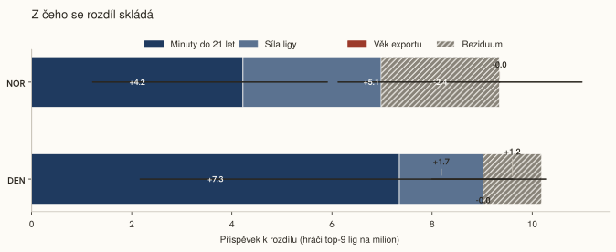
Hodnoty napsané uvnitř každého segmentu, pokud se vejdou; reziduum šrafované.
Jak to víme Lineární rozklad ridge regresí ve stylu Blinder-Oaxaca (Oaxaca, 1973; Blinder, 1973), fitovaný na 8 peer zemích s daty pro všechny tři kanály; bootstrapové 90% intervaly, 1000 převzorkování; rozklad korelace, ne kauzální účetnictví.
Federace by sledovala, který kanál svůj příspěvek zvětšuje, ne brala rozklad jako pevný.
Kdo to je?
Jako analytická otázka V číslech: 17 vybraných karet z fondu sezóny 2025/26 podle šesti výběrových pravidel, jedno na herní post a pravidlo.
Co jsme udělali Spárovali jsme sezónu každého hráče s jeho reprezentačními nominacemi a fotkou a pak podle šesti pravidel vybrali jednoho hráče na postovou skupinu.
17 karet vybraných šesti pravidly.
Jak bylo vybráno 17 karet
Proč tyto karty: jedna karta na post na pravidlo, v tomto pořadí — (a) nejvyšší góly + asistence na 90 min, upravené o ligu, (b) nejmladší reprezentační nominace, (c) nejvíc minut v top-9 ligách mezi nominovanými na 2026 FIFA World Cup, (d) nejvíc minut v domácí lize mezi nominovanými na 2026 FIFA World Cup, (e) nejvíc minut v top-9 ligách, (f) nejvíc domácích minut do 23 let bez sezóny v top-9 lize. Hráč vybraný dřívějším pravidlem propadá na další jméno, takže pozdější řada může ukázat druhé jméno podle svého měřítka. Řady seskupují šest pravidel; řada jádra reprezentace obsahuje dvě z nich.
Style mapaHlavní střelciKvalitou upravená mapaStřelci s vysokým objemem v top-5 ligách
Taktické čtení
Hlavní střelci — podíl gólů ze hry skoro dvojnásobný oproti mediánu útočníků při startovací minutáži (56 %). Zakončující útočník první volby (Schick, Patrak, Chorý).
Trajektorie 2024/25 → 2025/26
↓pokles−0,20G+A / 90 upr.1684 min → 1988 min
Historické analogy ve věku 30
Serhou GuirassyGUI
GER-Bundesliga 2025/26 · 2337 min · 0,48 ·
d = 0,47
Ihlas BebouTOG
GER-Bundesliga 2023/24 · 1636 min · 0,46 ·
d = 0,50
Pere MillaESP
ESP-La Liga 2021/22 · 1644 min · 0,44 ·
d = 0,62
2024–25 Nations League · 2026 FIFA World Cup · UEFA Euro 2024
Vybrán jako: nejvyšší góly + asistence na 90 min, upravené o ligu mezi FW.
Václav ČernýBeşiktaşMF0,22G+A / 90 upr.—
MFBeşiktaş
Václav Černý
MF · 29 · Beşiktaş (2026/27) · reprezentace 2024–26
2025/26 · Beşiktaş · TUR-Süper Lig
G+A / 90 upr.
0,22
Góly bez penalt / asistence na 90
0,23 / 0,36
Minuty
1991 (74 %)
Style mapaKreativní záložníci s vysokou minutážíKvalitou upravená mapaProduktivní záložníci v top-5 ligách
Taktické čtení
Startující tvůrci hry — asistenční podíl trojnásobný oproti mediánu záložníků při 62 % minut, střelecky skoro dvojnásobní. Kreativní centrum střední třetiny (Provod, Vlkanova, Ladra).
Historické analogy ve věku 29
Efkan Bekiroğlu
TUR-Süper Lig 2023/24 · 2126 min · 0,22 ·
d = 0,18
TrézéguetEGY
TUR-Süper Lig 2022/23 · 2127 min · 0,21 ·
d = 0,23
João NovaisPOR
TUR-Süper Lig 2021/22 · 1835 min · 0,21 ·
d = 0,23
2026 World Cup qualification · UEFA Euro 2024
Vybrán jako: nejvyšší góly + asistence na 90 min, upravené o ligu mezi MF.
Style mapaObránci s vysokým podílem asistencí a vysokou minutážíKvalitou upravená mapaObránci s vysokým podílem asistencí v top-5 ligách
Taktické čtení
Ofenzivní krajní obránci — asistenční podíl sedminásobný oproti mediánu obránců při startovací minutáži (65 %). Krajní obránce, jehož práce končí v útočné třetině (Coufal, Icha, Hadaš).
Trajektorie 2024/25 → 2025/26
↑zlepšení+0,15G+A / 90 upr.1067 min → 3012 min
Historické analogy ve věku 34
Óscar de MarcosESP
ESP-La Liga 2022/23 · 2819 min · 0,14 ·
d = 0,41
Leandro CabreraURU
ESP-La Liga 2024/25 · 2869 min · 0,12 ·
d = 0,53
Jeffrey GouweleeuwNED
GER-Bundesliga 2024/25 · 2944 min · 0,10 ·
d = 0,63
2024–25 Nations League · 2026 FIFA World Cup · UEFA Euro 2024
Vybrán jako: nejvyšší góly + asistence na 90 min, upravené o ligu mezi DF.
Jádro reprezentace — nominace na 2026 FIFA World Cup: nejvíc minut v top-9 ligách, nejvíc minut v domácí lize
Pavel ŠulcLyonFW0,46G+A / 90 upr.—
FWLyon
Pavel Šulc
FW · 26 · Lyon (2026/27) · reprezentace 2024–26
2025/26 · Lyon · FRA-Ligue 1
G+A / 90 upr.
0,46
Góly bez penalt / asistence na 90
0,63 / 0,17
Minuty
1566 (54 %)
Style mapaHlavní střelciKvalitou upravená mapaStřelci s vysokým objemem v top-5 ligách
Taktické čtení
Hlavní střelci — podíl gólů ze hry skoro dvojnásobný oproti mediánu útočníků při startovací minutáži (56 %). Zakončující útočník první volby (Schick, Patrak, Chorý).
Historické analogy ve věku 26
Amine GouiriALG
FRA-Ligue 1 2025/26 · 1326 min · 0,43 ·
d = 0,41
Randal Kolo MuaniFRA
FRA-Ligue 1 2023/24 · 1268 min · 0,43 ·
d = 0,50
Bamba DiengSEN
FRA-Ligue 1 2025/26 · 1212 min · 0,43 ·
d = 0,56
2024–25 Nations League · 2026 FIFA World Cup · UEFA Euro 2024
Vybrán jako: nejvíc minut v top-9 ligách mezi nominovanými na MS 2026 (FW).
Tomáš SoučekWest Ham UnitedMF0,21G+A / 90 upr.↓ pokles · −0,11 G+A / 90 upr.
MFWest Ham United
Tomáš Souček
MF · 31 · West Ham United (poslední známý) · reprezentace 2024–26
2025/26 · West Ham · ENG-Premier League
G+A / 90 upr.
0,21
Góly bez penalt / asistence na 90
0,20 / 0,00
Minuty
2200 (64 %)
Style mapaStarší rotační záložníciKvalitou upravená mapaProduktivní záložníci v top-5 ligách
Taktické čtení
Veteránští rotační záložníci — medián věku 30 při řízené minutáži (40 %), produkce průměrná, kartový podíl nad ní. Zkušenost držená v kádru spíš než na hřišti každý týden (Souček, Trávník, Daníček).
Trajektorie 2024/25 → 2025/26
↓pokles−0,11G+A / 90 upr.2567 min → 2200 min
Historické analogy ve věku 31
John McGinnSCO
ENG-Premier League 2024/25 · 2223 min · 0,21 ·
d = 0,03
RodrigoESP
ENG-Premier League 2021/22 · 2265 min · 0,22 ·
d = 0,14
Mateusz KlichPOL
ENG-Premier League 2020/21 · 2393 min · 0,23 ·
d = 0,33
2024–25 Nations League · 2026 FIFA World Cup · UEFA Euro 2024
Vybrán jako: nejvíc minut v top-9 ligách mezi nominovanými na MS 2026 (MF).
Style mapaHlavní střelciKvalitou upravená mapaÚtočníci základní sestavy s vysokou minutáží
Taktické čtení
Hlavní střelci — podíl gólů ze hry skoro dvojnásobný oproti mediánu útočníků při startovací minutáži (56 %). Zakončující útočník první volby (Schick, Patrak, Chorý).
Trajektorie 2024/25 → 2025/26
↑zlepšení+0,07G+A / 90 upr.2123 min → 1838 min
Historické analogy ve věku 31
Serdar DursunTUR
TUR-Süper Lig 2021/22 · 1869 min · 0,29 ·
d = 0,25
IviESP
POL-Ekstraklasa 2024/25 · 1759 min · 0,27 ·
d = 0,27
Mats SeuntjensNED
NED-Eredivisie 2022/23 · 1564 min · 0,31 ·
d = 0,54
2024–25 Nations League · 2026 FIFA World Cup · UEFA Euro 2024
Vybrán jako: nejvíc minut v domácí lize mezi nominovanými na MS 2026 (FW).
Vladimír DaridaHradec KrálovéMF0,16G+A / 90 upr.—
MFHradec Králové
Vladimír Darida
MF · 36 · Hradec Králové (2026/27) · reprezentace 2024–26
2025/26 · Hradec Králové · CZE-First League
G+A / 90 upr.
0,16
Góly bez penalt / asistence na 90
0,29 / 0,13
Minuty
2764 (90 %)
Style mapaOfenzivní záložníci s vysokou střeleckou produkcíKvalitou upravená mapaZáložníci základní sestavy s nízkou střeleckou produkcí
Taktické čtení
Střílející ofenzivní záložníci — podíl gólů ze hry trojnásobný oproti mediánu záložníků při startovací minutáži (56 %). Osmička/desítka, která dobíhá do vápna (Darida, Ševčík, Višinský).
Historické analogy ve věku 36
Alexandru MaximROU
TUR-Süper Lig 2025/26 · 2680 min · 0,12 ·
d = 0,42
Jesús ImazESP
POL-Ekstraklasa 2025/26 · 2784 min · 0,23 ·
d = 0,60
Lucas BigliaARG
TUR-Süper Lig 2021/22 · 2795 min · 0,08 ·
d = 0,67
2024–25 Nations League · 2026 FIFA World Cup
Vybrán jako: nejvíc minut v domácí lize mezi nominovanými na MS 2026 (MF).
Style mapaSoubojoví rotační útočníciKvalitou upravená mapaÚtočníci s vysokým kartovým podílem
Taktické čtení
Rotační útočníci, jejichž podpisem je fyzický souboj — kartový podíl zhruba trojnásobný oproti mediánu útočníků, třetina minut, produkce průměrná. Presink a souboje spíš než zakončení (Mašek, Vojta, Kozak).
Historické analogy ve věku 23
Hierman BarkoŭskiBLR
POL-Ekstraklasa 2024/25 · 962 min · 0,21 ·
d = 0,36
Christian RasmussenDEN
GER-2. Bundesliga 2025/26 · 1054 min · 0,24 ·
d = 0,40
Tadeáš VachoušekCZE
CZE-First League 2026/27 · 502 min · 0,24 ·
d = 0,40
2026 World Cup qualification
Vybrán jako: nejmladší reprezentační nominace mezi FW.
Style mapaMladí záložníci s nízkou minutážíKvalitou upravená mapaMladí záložníci s nízkou minutáží
Taktické čtení
Rozvojoví záložníci — největší záložnická skupina domácího fondu: medián věku 22, pod třetinu minut, produkce na mediánu. Čekárna pipeline (Daněk, Křišťan, Mikulenka).
Historické analogy ve věku 18
Alexander Røssing-LelesiitNOR
NOR-Eliteserien 2024/25 · 547 min · 0,10 ·
d = 0,30
Emirhan İlkhanTUR
TUR-Süper Lig 2021/22 · 635 min · 0,09 ·
d = 0,32
Luis EngelnsGER
GER-2. Bundesliga 2024/25 · 542 min · 0,06 ·
d = 0,45
2024–25 Nations League · 2026 FIFA World Cup
Vybrán jako: nejmladší reprezentační nominace mezi MF.
Style mapaZáložníci základní sestavy s nízkou střeleckou produkcíKvalitou upravená mapaZáložníci základní sestavy s nízkou střeleckou produkcí
Taktické čtení
Motor týmu — skoro 80 % minut při průměrné produkci: defenzivní a box-to-box záložníci, jejichž hodnota je kontinuita a struktura, ne čísla (Hellebrand, Horák, Čermák).
Trajektorie 2024/25 → 2025/26
→stabilní−0,04G+A / 90 upr.2733 min → 2545 min
Historické analogy ve věku 29
Nicolas RommensBEL
BEL-Pro League 2022/23 · 2398 min · 0,13 ·
d = 0,29
Siebe SchrijversBEL
BEL-Pro League 2024/25 · 2719 min · 0,13 ·
d = 0,31
Thom HayeIDN
NED-Eredivisie 2023/24 · 2610 min · 0,10 ·
d = 0,32
Style mapaObránci základní sestavyKvalitou upravená mapaObránci základní sestavy
Taktické čtení
Obranné jádro — 85 % minut, produkce na dně skupiny. Signálem je dostupnost a kontinuita, ne čísla (Hůlka, Halinský, Cedidla).
Historické analogy ve věku 26
Jonjoe KennyENG
GER-Bundesliga 2022/23 · 2244 min · 0,04 ·
d = 0,03
Marco FriedlAUT
GER-Bundesliga 2023/24 · 2197 min · 0,03 ·
d = 0,10
Ferland MendyFRA
ESP-La Liga 2020/21 · 2208 min · 0,03 ·
d = 0,14
2024–25 Nations League · 2026 FIFA World Cup · UEFA Euro 2024
Vybrán jako: nejvíc minut v top-9 ligách mezi DF.
Nejvíc domácích minut do 23 let, zatím bez sezóny v top-9 lize
LMLukáš MašekSlovan LiberecFW0,16G+A / 90 upr.—
LMFWSlovan Liberec
Lukáš Mašek
FW · 22 · Slovan Liberec (2026/27)
2025/26 · Slovan Liberec · CZE-First League
G+A / 90 upr.
0,16
Góly bez penalt / asistence na 90
0,30 / 0,00
Minuty
1806 (57 %)
Style mapaSoubojoví rotační útočníciKvalitou upravená mapaÚtočníci s vysokým kartovým podílem
Taktické čtení
Rotační útočníci, jejichž podpisem je fyzický souboj — kartový podíl zhruba trojnásobný oproti mediánu útočníků, třetina minut, produkce průměrná. Presink a souboje spíš než zakončení (Mašek, Vojta, Kozak).
Historické analogy ve věku 22
Isak JensenDEN
DEN-Superliga 2024/25 · 1953 min · 0,16 ·
d = 0,36
Mustapha IsahNGA
NOR-Eliteserien 2025/26 · 1653 min · 0,17 ·
d = 0,37
Mbaye Jacques NdiayeSEN
POL-Ekstraklasa 2024/25 · 1574 min · 0,13 ·
d = 0,39
Vybrán jako: nejvíc minut v domácí lize mezi FW do 23 let bez sezóny v top-9 lize.
Style mapaZáložníci základní sestavy s nízkou střeleckou produkcíKvalitou upravená mapaZáložníci základní sestavy s nízkou střeleckou produkcí
Taktické čtení
Motor týmu — skoro 80 % minut při průměrné produkci: defenzivní a box-to-box záložníci, jejichž hodnota je kontinuita a struktura, ne čísla (Hellebrand, Horák, Čermák).
Trajektorie 2024/25 → 2025/26
→stabilní0,00G+A / 90 upr.2017 min → 2634 min
Historické analogy ve věku 23
Tomas RigoSVK
CZE-First League 2024/25 · 2528 min · 0,10 ·
d = 0,25
Eric MartelGER
GER-2. Bundesliga 2024/25 · 2740 min · 0,06 ·
d = 0,28
Jonas TherkelsenNOR
GER-2. Bundesliga 2025/26 · 2722 min · 0,10 ·
d = 0,30
UEFA European Under-21 Championship 2025
Vybrán jako: nejvíc minut v domácí lize mezi MF do 23 let bez sezóny v top-9 lize.
Braga (POR-Primeira Liga) · 83 % vstřelených gólů ligy
2024–25 Nations League · 2026 FIFA World Cup · UEFA European Under-21 Championship 2025
Vybrán jako: nejvíc minut v top-9 ligách mezi domácími brankáři.
AKGKTottenham
Antonín Kinský
GK · Tottenham (ENG-Premier League) · reprezentace 2024–26
2025/26 · 630 min
Obdržené góly/90
1,00
Zákroky/90
1,43
Úspěšnost zákroků
65,9 %
Klubová úroveň
Tottenham (ENG-Premier League) · 42 % vstřelených gólů ligy
2026 World Cup qualification
Vybrán jako: nejmladší domácí brankář se vstupním počtem minut v top-9.
* Každá karta vykresluje existující dataset; žádný výpočet nad rámec spojení. Věk na řádku se jménem je věk na začátku sezóny 2026/27 (rok začátku − rok narození); klub je z tabulek 2026/27, nebo — označený „poslední známý“ — ze stránky země na FBref, kde hráč nemá řádku 2026/27. Věk na řádku analogu sleduje konvenci hledače analogů (rok začátku sezóny + 1 − rok narození).
Jak to víme Řádky FBref, Wikipedie a Wikidat sezóny 2025/26 spojené podle jména a ročníku narození; šest výběrových pravidel, v tomto pořadí — viz níže.
Federace by sledovala, jak se výběr karet mění s věkem kohorty, ne jednu kartu.
Celý argument na jedné obrazovce: pět čísel za tím, proč je fond hráčů tenký, jediné spojení, které nese většinu rozdílu, dvě kontroly modelů za těmi čísly a to, co z toho nic neukazuje.
Číslo
CZE
NOR
DEN
Podíl ligových minut, které připadly hráčům do 21 let
6,4 %
11,5 %
15,3 %
Průměrný věk odehrané minuty v lize
26,0
25,6
25,4
Věk při první sezóně se skutečným herním časem v zahraniční lize
24
22,5
23
Podíl odchodů do zahraničí do ligy ne silnější než vlastní
19 %
22 %
10 %
Hráči v nejsilnějších ligách Evropy na milion obyvatel
2,39
9,37
12,58
Pokud si z tohoto máte odnést jednu věc: jediné měřené spojení, které nese většinu rozdílu, je pro každé srovnání jiné — u země Norsko je to jak silná je domácí liga, u země Dánsko kolik herního času dostávají mladí hráči doma.
Jak silná je domácí liga
Sezóna v domácí lize je hodná zhruba 0,67 sezóny v Premier League (0,59–0,75).
Kdy se počet hráčů v nejsilnějších ligách zlomil
Kolem sezóny 2014/15, s 62 procent pravděpodobností, že je ta změna skutečná, ne jen běžný výkyv mezi sezónami.
Co tohle neukazuje
Peníze: transferové částky, mzdy a rozpočty akademií nejsou součástí žádného čísla výše.
Jak akademie a trenérská práce skutečně fungují den co den — to žádný veřejný datový zdroj použitý zde nevidí.
Agenty a to, jak se odchod do zahraničí skutečně domlouvá — to se odehrává mimo jakoukoli tabulku, kterou tento pipeline umí číst.
Směr šipky: nízký podíl herního času mladých hráčů doma může tenkou generaci spoluzpůsobovat, stejně dobře ale může být jejím příznakem — pět čísel výše jsou souvislosti měřené stejným způsobem pro každou zemi.
Prozkoumat data
Benchmark vs peer země
Strukturální benchmark vs peer země
Fotbalová intuice zná český fond hráč po hráči. Jeho strukturální pozice mezi peer zeměmi potřebuje agregaci, kterou nikdo nedrží na jednom místě. Tři čísla níže se obvykle nesbírají pohromadě.
Kohortové mezery — útočníci
Kohorta
U22
23-25
26-29
30+
Czechia
—
1
2
2
Denmark
1
7
2
—
Croatia
—
3
—
2
Austria
1
2
—
1
Switzerland
—
1
3
—
Kohortové mezery — záložníci
Kohorta
U22
23-25
26-29
30+
Czechia
1
2
3
1
Denmark
6
6
13
6
Croatia
—
4
8
6
Austria
2
6
4
7
Switzerland
4
6
10
3
Kohortové mezery — obránci
Kohorta
U22
23-25
26-29
30+
Czechia
—
1
3
3
Denmark
2
5
7
2
Croatia
1
1
6
1
Austria
1
3
5
1
Switzerland
2
5
4
6
* Počet a medián npG+A na 90 minut hráčů s národností země v top-9 lize, 2025/26, aspoň 450 minut; kohorta podle věku na kalendářním přelomu sezóny (počáteční rok + 1 − rok narození). Zobrazeno 5 z 9 zemí; heatmapa výše nese všechny. Největší české propady proti peer mediánu počtu: záložníci 23-25 (2 vs 6), záložníci 26-29 (3 vs 6), záložníci 30+ (1 vs 3,5).
Celý obrázek, všech devět peer zemí najednou, jako heatmapa:
Medián gólů ze hry + asistencí na 90 minut podle země, postu a věkové kohorty, 2025/26; orámovaná řada je Česko.
Pozorování
Na obyvatele: pořadí 7 z 9 · Největší kohortová mezera: záložníci 23-25 · Trajektorie 2024/25 → 2025/26: převážně stabilní
Na obyvatele: pořadí 7 z 9
26 hráčů Česka na soupiskách 2025/26 v 9 nejsilnějších ligách dává 2,39 na milion obyvatel, pořadí 7 z 9. Dánsko vede s 12,58, 5,3krát vyšší hustotou než česká; Slovensko sedí o místo výš s 3,14 z 17 hráčů a populací 2,0krát menší. Níž než Česko: Maďarsko, Polsko.
Největší kohortová mezera: záložníci 23-25
Při počítání hráčů top-9 lig 2025/26 podle postu a věkové kohorty a srovnání počtu Česka s mediánem ostatních 8 peer zemí jsou 3 největší propady tyto: záložníci 23-25 — 2 hráčů Česka proti peer mediánu 6; záložníci 26-29 — 3 hráčů Česka proti peer mediánu 6; záložníci 30+ — 1 hráčů Česka proti peer mediánu 3,5. Kohortové tabulky výše ukazují mediány za těmi počty.
Trajektorie 2024/25 → 2025/26: převážně stabilní
92 hráčů s příslušností Česka mělo aspoň 900 minut v obou sezónách 2024/25 a 2025/26: útočníci 13 (5 nahoru, 6 stabilně, 2 dolů); záložníci 43 (3 nahoru, 31 stabilně, 9 dolů); obránci 36 (1 nahoru, 34 stabilně, 1 dolů). Posun nahoru nebo dolů = změna gólů + asistencí na 90 minut (upravených o ligu) o víc než 0,05; 71 z 92 zůstalo v tomto pásmu. Jde o meziroční rozdíly, ne projekce.
Cluster archetypy
Cluster archetypy (style projekce)
Clustery jsou fitované na celém korpusu hráčských sezón 2025/26 a čtené tady přes jejich české členy, K vybrané podle silhouette skóre (Rousseeuw, 1987) pomocí scikit-learn (Pedregosa et al., 2011). Popisek popisuje mediánový otisk clusteru; počet jsou čeští členové korpusového clusteru; jména jsou čeští členové s nejvíc minutami.
Atlas skupiny útočníci 2025/26 v obou projekcích: 31 hráčů s příslušností Česka barevně proti korpusu 924. Oxbloodové kroužky značí reprezentační fond (nominace 2024–26, 13 hráčů).Atlas skupiny záložníci 2025/26 v obou projekcích: 102 hráčů s příslušností Česka barevně proti korpusu 2648. Oxbloodové kroužky značí reprezentační fond (nominace 2024–26, 28 hráčů).Atlas skupiny obránci 2025/26 v obou projekcích: 59 hráčů s příslušností Česka barevně proti korpusu 1947. Oxbloodové kroužky značí reprezentační fond (nominace 2024–26, 19 hráčů).
Útočníci
Útočníci s vysokým podílem asistencí
CZE 3 z 112 · repre fond 1 · medián ročníku 1997
VKVasil KušejVJVáclav Jurečka
Mediány korpusu: 0,30 gólů ze hry a 0,21 asistencí na 90 minut, 33 % minut klubu, věk 25, 0,15 karet na 90 minut.
Taktické čteníTvůrci z útočné řady — asistenční podíl víc než dvojnásobný oproti mediánu útočníků při rotační minutáži (38 %), střelecky na mediánu. Křídelníci a druzí útočníci, kteří vápno zásobují, nikoli obsazují (Kušej, Jurečka, Pulkrab).
Soubojoví rotační útočníci
CZE 7 z 144 · repre fond 3 · medián ročníku 2003
LMLukáš MašekMVMatyas VojtaMKMatyas KozakCKChristophe Kabongo
Mediány korpusu: 0,30 gólů ze hry a 0,10 asistencí na 90 minut, 33 % minut klubu, věk 24, 0,29 karet na 90 minut.
Taktické čteníRotační útočníci, jejichž podpisem je fyzický souboj — kartový podíl zhruba trojnásobný oproti mediánu útočníků, třetina minut, produkce průměrná. Presink a souboje spíš než zakončení (Mašek, Vojta, Kozak).
Útočníci základní sestavy s vysokou minutáží
CZE 0 z 148 · repre fond 0 · medián ročníku —
Mediány korpusu: 0,30 gólů ze hry a 0,13 asistencí na 90 minut, 76 % minut klubu, věk 24, 0,14 karet na 90 minut.
Taktické čteníKaždotýdenní startující — tři čtvrtiny minut sezóny, asistenční podíl zhruba 1,5násobek mediánu útočníků, střelecky na mediánu. Převážně otisk pěti nejsilnějších lig: útočník první volby, který hru spojuje stejně jako zakončuje.
Starší útočníci se střední minutáží
CZE 9 z 142 · repre fond 2 · medián ročníku 1990
JCJan ChramostaTPTomáš PoznarVPVáclav PilařDPDavid Puškáč
Mediány korpusu: 0,28 gólů ze hry a 0,08 asistencí na 90 minut, 46 % minut klubu, věk 32, 0,17 karet na 90 minut.
Taktické čteníZkušení útočníci s řízenou minutáží — medián věku 31, zhruba 40 % minut, produkce na mediánu. Impaktový nebo cílový útočník v rotaci (Chramosta, Poznar, Pilař).
Mladí útočníci s nízkou minutáží
CZE 4 z 255 · repre fond 0 · medián ročníku 2000
TZTomás ZlatohlávekPJPavel JuroskaOZOndřej Zmrzlý
Mediány korpusu: 0,27 gólů ze hry a 0,08 asistencí na 90 minut, 29 % minut klubu, věk 23, 0,13 karet na 90 minut.
Taktické čteníRozvojová vrstva a největší cluster útočníků — medián věku 23, pod 30 % minut, produkce těsně pod mediánem. Tady sedí většina mladých útočníků domácího fondu (Zlatohlávek, Juroska, Zmrzlý).
Hlavní střelci
CZE 8 z 123 · repre fond 7 · medián ročníku 1997
PSPatrik SchickVPVojtech PatrakTCTomáš ChorýJKJan Kuchta
Mediány korpusu: 0,50 gólů ze hry a 0,10 asistencí na 90 minut, 51 % minut klubu, věk 25, 0,16 karet na 90 minut.
Taktické čteníHlavní střelci — podíl gólů ze hry skoro dvojnásobný oproti mediánu útočníků při startovací minutáži (56 %). Zakončující útočník první volby (Schick, Patrak, Chorý).
Záložníci
Záložníci s vysokým kartovým podílem
CZE 5 z 387 · repre fond 2 · medián ročníku 2000
MRMatěj RynešDLDaniel LanghamerVSVojtěch SmržJMJan Matoušek
Mediány korpusu: 0,08 gólů ze hry a 0,08 asistencí na 90 minut, 38 % minut klubu, věk 24, 0,33 karet na 90 minut.
Taktické čteníZáložníci na zisk míče a souboje — kartový podíl (zhruba 2,5násobek mediánu záložníků) je určující znak, produkce na dně skupiny. Profil „ničitele“, často ve dvojici před obranou (Ryneš, Langhamer, Smrž).
Starší rotační záložníci
CZE 26 z 425 · repre fond 2 · medián ročníku 1993
TSTomáš SoučekMTMichal TrávníkVDVlastimil DaníčekFZFilip Zorvan
Mediány korpusu: 0,08 gólů ze hry a 0,10 asistencí na 90 minut, 39 % minut klubu, věk 30, 0,21 karet na 90 minut.
Taktické čteníVeteránští rotační záložníci — medián věku 30 při řízené minutáži (40 %), produkce průměrná, kartový podíl nad ní. Zkušenost držená v kádru spíš než na hřišti každý týden (Souček, Trávník, Daníček).
Mladí záložníci s nízkou minutáží
CZE 30 z 624 · repre fond 5 · medián ročníku 2003
KDKryštof DaněkJKJakub KřišťanMMMatěj MikulenkaASAlexandr Sojka
Mediány korpusu: 0,08 gólů ze hry a 0,09 asistencí na 90 minut, 29 % minut klubu, věk 22, 0,17 karet na 90 minut.
Taktické čteníRozvojoví záložníci — největší záložnická skupina domácího fondu: medián věku 22, pod třetinu minut, produkce na mediánu. Čekárna pipeline (Daněk, Křišťan, Mikulenka).
Záložníci základní sestavy s nízkou střeleckou produkcí
CZE 21 z 600 · repre fond 8 · medián ročníku 1999
PHPatrik HellebrandDHDaniel HorákMCMarcel ČermákLCLukáš Červ
Mediány korpusu: 0,08 gólů ze hry a 0,09 asistencí na 90 minut, 79 % minut klubu, věk 25, 0,18 karet na 90 minut.
Taktické čteníMotor týmu — skoro 80 % minut při průměrné produkci: defenzivní a box-to-box záložníci, jejichž hodnota je kontinuita a struktura, ne čísla (Hellebrand, Horák, Čermák).
Ofenzivní záložníci s vysokou střeleckou produkcí
CZE 10 z 320 · repre fond 4 · medián ročníku 2000
VDVladimír DaridaMSMichal ŠevčíkDVDenis VišinskýDMDaniel Mareček
Mediány korpusu: 0,25 gólů ze hry a 0,13 asistencí na 90 minut, 54 % minut klubu, věk 24, 0,17 karet na 90 minut.
Taktické čteníStřílející ofenzivní záložníci — podíl gólů ze hry trojnásobný oproti mediánu záložníků při startovací minutáži (56 %). Osmička/desítka, která dobíhá do vápna (Darida, Ševčík, Višinský).
Kreativní záložníci s vysokou minutáží
CZE 10 z 290 · repre fond 7 · medián ročníku 1997
LPLukáš ProvodAVAdam VlkanovaTLTomáš LadraVCVáclav Černý
Mediány korpusu: 0,14 gólů ze hry a 0,22 asistencí na 90 minut, 59 % minut klubu, věk 24, 0,17 karet na 90 minut.
Taktické čteníStartující tvůrci hry — asistenční podíl trojnásobný oproti mediánu záložníků při 62 % minut, střelecky skoro dvojnásobní. Kreativní centrum střední třetiny (Provod, Vlkanova, Ladra).
Obránci
Obránci základní sestavy
CZE 12 z 431 · repre fond 5 · medián ročníku 1999
LHLukáš HůlkaDHDenis HalinskýMCMartin CedidlaMCMartin Chlumecký
Mediány korpusu: 0,03 gólů ze hry a 0,03 asistencí na 90 minut, 84 % minut klubu, věk 25, 0,18 karet na 90 minut.
Taktické čteníObranné jádro — 85 % minut, produkce na dně skupiny. Signálem je dostupnost a kontinuita, ne čísla (Hůlka, Halinský, Cedidla).
Obránci s vysokým kartovým podílem
CZE 8 z 284 · repre fond 2 · medián ročníku 2000
KPKarel PojeznýMCMatěj ChalušFCFilip ČihákEHEric Hunál
Mediány korpusu: 0,02 gólů ze hry a 0,02 asistencí na 90 minut, 47 % minut klubu, věk 24, 0,36 karet na 90 minut.
Taktické čteníSoubojoví obránci — kartový podíl 2,5násobek mediánu obránců při rotační minutáži (46 %). Profil fyzického stopera (Pojezný, Chaluš, Čihák).
Mladí obránci s nízkou minutáží
CZE 12 z 424 · repre fond 6 · medián ročníku 2003
MKMikuláš KonečnýJKJakub KolarFPFilip PrebslASAdam Sevinsky
Mediány korpusu: 0,02 gólů ze hry a 0,02 asistencí na 90 minut, 34 % minut klubu, věk 22, 0,18 karet na 90 minut.
Taktické čteníRozvojoví obránci — medián věku 22, zhruba třetina minut, produkce na dně. Vrstva, ze které kohorta 23–25 čerpá (Konečný, Kolar, Prebsl).
Střílející obránci
CZE 4 z 218 · repre fond 1 · medián ročníku 1999
SCŠtěpán ChaloupekJBJan BořilDLDavid Lischka
Mediány korpusu: 0,10 gólů ze hry a 0,04 asistencí na 90 minut, 55 % minut klubu, věk 25, 0,20 karet na 90 minut.
Taktické čteníHrozby ze standardek — obránci střílející pětinásobek mediánu obránců při 60 % minut. Přítomnost ve vzduchu v obou vápnech (Chaloupek, Bořil, Lischka).
Starší obránci
CZE 19 z 363 · repre fond 2 · medián ročníku 1993
FNFilip NovákJBJakub BrabecJFJiří FleišmanTHTomáš Holeš
Mediány korpusu: 0,02 gólů ze hry a 0,02 asistencí na 90 minut, 44 % minut klubu, věk 31, 0,20 karet na 90 minut.
Taktické čteníZkušení obránci s řízenou minutáží — medián věku 31, 44 % minut, produkce na dně. Vedení a krytí spíš než startovací role (Novák, Brabec, Fleišman).
Obránci s vysokým podílem asistencí a vysokou minutáží
CZE 4 z 226 · repre fond 3 · medián ročníku 1997
VCVladimír CoufalMIMarek IchaMHMatěj Hadaš
Mediány korpusu: 0,04 gólů ze hry a 0,12 asistencí na 90 minut, 64 % minut klubu, věk 25, 0,20 karet na 90 minut.
Taktické čteníOfenzivní krajní obránci — asistenční podíl sedminásobný oproti mediánu obránců při startovací minutáži (65 %). Krajní obránce, jehož práce končí v útočné třetině (Coufal, Icha, Hadaš).
Trajektorie
Trajektorie 2024/25 → 2025/26 (česká příslušnost, ≥ 900 minut v obou sezónách)
Meziroční změna gólů + asistencí na 90 minut, upravených o ligu. Posun nahoru nebo dolů se počítá nad ± 0,05; všechno uvnitř pásma je stabilní a v seznamu není.
Čtyři exhibity srovnávající Česko s 8 peer zeměmi: mládežnická expozice doma, exportní trasa, jak se exportům daří a kdo to dokázal.
Exhibit A — expozice mládeže doma
Podíl celkových minut domácí ligy odehraných vlastními hráči do 21 let včetně, 2025/26.
* Σ minut hráčů s národností země ligy a věkem ≤ 21 na začátku sezóny ÷ Σ minut všech hráčů ligy, 2025/26. Podíly do 23 let: DEN 21,2 %, HUN 22,6 %, CRO 22,7 %, NOR 19,8 %, AUT 16,5 %, POL 14,4 %, SUI 16,6 %, CZE 13,5 %. Liga bez sloupce není pokrytá FBref.
Exhibit B — exportní trasa
Pro každého hráče peer země na soupisce top-9 ligy 2026/27: věk v první sezóně v top-9 lize (celá soupiska a jen nedávní příchozí) a u nedávných příchozích liga sezóny před ní.
České exporty: 15 hráčů, mediánový věk exportu 23 (nedávní příchozí 7, medián 22), 71 % nedávných přímo z ligy Chance Liga*.
Země
n
Nedávní
Věk exportu (všichni)
Věk exportu (nedávní)
Domácí
Odrazová liga
Jiná top-9
Nepokryto
Cenzurováno
CZE Česko
15
7
23
22
71 %
0 %
0 %
29 %
20 %
SVK Slovensko
11
4
24
23
0 %
0 %
0 %
100 %
27 %
AUT Rakousko
37
13
23
22
54 %
8 %
0 %
38 %
35 %
HUN Maďarsko
18
11
22
22
91 %
0 %
0 %
9 %
11 %
POL Polsko
30
13
23
24
38 %
23 %
0 %
38 %
20 %
CRO Chorvatsko
39
10
23
24,5
60 %
10 %
0 %
30 %
31 %
DEN Dánsko
65
25
22
22
60 %
0 %
0 %
40 %
14 %
SUI Švýcarsko
42
13
23
21
85 %
0 %
0 %
15 %
33 %
NOR Norsko
37
17
21
22
53 %
0 %
0 %
47 %
19 %
* Věk exportu = věk v první sezóně v kterékoli hlavní lize, historie zpět do 2020/21; první výskyt už v 2020/21 je cenzurovaný. Nedávní příchozí: první sezóna v top-9 lize 2025/26 nebo 2026/27, jediní, jejichž předchozí sezóna leží uvnitř staženého okna (od 2024/25 pro domácí ligy peer zemí). Odrazové ligy: NED-Eredivisie, BEL-Pro League, POR-Primeira Liga, TUR-Süper Lig, GER-2. Bundesliga. Nepokryto: žádná dřívější řádka v datech.
Exhibit C — jak se exportům daří
Hráči peer zemí v klubu top-9 ligy v sezóně 2025/26: mediánový podíl minut klubu a síla klubu v rámci jeho ligy.
HUN
Maďarsko n = 15
72 %
CZE
Česko n = 26
67 %
SVK
Slovensko n = 17
60 %
AUT
Rakousko n = 44
59 %
DEN
Dánsko n = 75
56 %
NOR
Norsko n = 52
56 %
POL
Polsko n = 45
55 %
CRO
Chorvatsko n = 47
55 %
SUI
Švýcarsko n = 54
50 %
* Podíl minut = minuty hráče ÷ (zápasy klubu × 90), 2025/26, jedna řádka na hráčskou sezónu. Proxy síly klubu: percentil vstřelených gólů v rámci ligy — kluby seřazené podle gólů, které jejich vlastní soupiska v sezóně vstřelila (ClubElo bylo v době běhu nedostupné). Obojí jsou mediány přes exporty země; n na zemi ve sloupcích.
Exhibit D — profil těch, kteří to dokázali
Góly + asistence na 90 minut, upravené o ligu, v sezóně 2025/26 podle úrovně vlastní ligy hráče: domácí, odrazová, top-9 nebo jiná pokrytá liga. Český počet a medián proti mediánu hodnot peer zemí.
Tabulka profilu podle úrovně a postu
Úroveň
Skupina
CZE n
CZE medián
Peer medián n
Peer medián
domácí liga
FW
27
0,21
17
0,13
domácí liga
MF
89
0,08
61
0,07
domácí liga
DF
49
0,03
45
0,03
odrazová liga
FW
0
—
2
0,28
odrazová liga
MF
0
—
2
0,09
odrazová liga
DF
0
—
2
0,04
top-9 liga
FW
5
0,27
5
0,29
top-9 liga
MF
7
0,12
18,5
0,14
top-9 liga
DF
7
0,03
9,5
0,04
jiná pokrytá liga
FW
1
0,12
6
0,13
jiná pokrytá liga
MF
6
0,08
6,5
0,08
jiná pokrytá liga
DF
3
0,01
5,5
0,02
* Úroveň = liga vlastní sezóny 2025/26 hráče. Peer medián n a peer medián jsou mediány přes peer země přítomné v dané úrovni a skupině; úroveň, kde země nemá hráče, chybí, není nula.
Exhibit E — kam české exporty míří
Z 192 zmapovaných hráčů Česka hraje 27 mimo ligu Chance Liga.
top-9Vladimír Coufal · Roman Květ · Ladislav Krejčí
liga peer zeměPatrik Hellebrand · Martin Chlumecký · Patrizio Stronati
* Koše podle ligy vlastní sezóny 2025/26 hráče; hráč se počítá jednou za každý post, stejně jako všude jinde na stránce, takže hráč s řádky ve dvou postech se počítá v obou; číslo před sloupcem je počet hráčů, medián násobičky je mediánová ligová násobička koše. Do strany: násobička cílové ligy ≤ násobička domácí ligy.
F · Soupiska 2026 FIFA World Cup podle ligové úrovně
Kde v sezóně 2025/26 hráli hráči nominovaní na 2026 FIFA World Cup (26 jmen), a totéž pro peer země na turnaji: Švýcarsko, Chorvatsko, Rakousko, Norsko. Úroveň = liga hráčovy sezóny 2025/26 s nejvíce minutami.
Minuty, násobičky a věkové kohorty podle zemí
Země
Medián minut
Medián násobičky
U22
23–25
26–29
30+
CZE Česko
1826,5
0,434
1
6
10
9
SUI Švýcarsko
2132
0,788
1
5
10
10
CRO Chorvatsko
1857
0,807
1
6
11
8
AUT Rakousko
1711,5
0,788
1
6
10
9
NOR Norsko
2164,5
0,832
2
6
14
4
* 9 hráčů soupisky nemá řádku 2025/26 v natažených ligách a počítají se jako nespárovaní.
Historické analogy
Historické analogy
Pro každého hráče z karet bere hledač 5 nejbližších hráčských sezón ve stejném věku napříč celým korpusem všech stažených lig — 9 hlavních lig zpět do 2020/21, ostatní od 2024/25 — všechny národnosti. Vzdálenost se počítá na třech standardizovaných featurách: npG+A/90 (kvalitou upravené), minuty, ligová násobička. U každého analogu jsou následující sezóny zobrazené tak, jak se staly. Popis, ne predikce: čtenář vidí rozptyl cest; metoda žádnou nevnucuje.
1Amine GouiriALG
FRA-Ligue 1 2025/26 · 1326 min · 0,43 npG+A/90 · d = 0,41
Žádná pozdější sezóna v korpusu.
2Randal Kolo MuaniFRA
FRA-Ligue 1 2023/24 · 1268 min · 0,43 npG+A/90 · d = 0,50
Pokračování:
2024/25
ITA-Serie A · 1160 min · 0,45
2025/26
ENG-Premier League · 1664 min · 0,20
3Bamba DiengSEN
FRA-Ligue 1 2025/26 · 1212 min · 0,43 npG+A/90 · d = 0,56
Žádná pozdější sezóna v korpusu.
4Breel EmboloSUI
FRA-Ligue 1 2022/23 · 1859 min · 0,40 npG+A/90 · d = 0,65
Pokračování:
2024/25
FRA-Ligue 1 · 1841 min · 0,33
2025/26
FRA-Ligue 1 · 1872 min · 0,35
5Jonathan BurkardtGER
GER-Bundesliga 2025/26 · 1336 min · 0,47 npG+A/90 · d = 0,67
Žádná pozdější sezóna v korpusu.
Cíl
Tomáš Chorý
FW · věk 31 · CZE-First League 2025/26 · 1838 min · 0,30 npG+A/90 quality
5 nejbližších ve stejném věku
5 nejbližších analogů a jejich pokračování
1Serdar DursunTUR
TUR-Süper Lig 2021/22 · 1869 min · 0,29 npG+A/90 · d = 0,25
Pokračování:
2023/24
TUR-Süper Lig · 812 min · 0,16
2025/26
TUR-Süper Lig · 1531 min · 0,19
2IviESP
POL-Ekstraklasa 2024/25 · 1759 min · 0,27 npG+A/90 · d = 0,27
Pokračování:
2025/26
POL-Ekstraklasa · 861 min · 0,12
3Mats SeuntjensNED
NED-Eredivisie 2022/23 · 1564 min · 0,31 npG+A/90 · d = 0,54
Pokračování:
2023/24
NED-Eredivisie · 956 min · 0,19
2023/24
NED-Eredivisie · 813 min · 0,12
2024/25
NED-Eredivisie · 664 min · 0,16
4Duckens NazonHAI
TUR-Süper Lig 2024/25 · 1957 min · 0,24 npG+A/90 · d = 0,54
Žádná pozdější sezóna v korpusu.
5Wout WeghorstNED
TUR-Süper Lig 2022/23 · 2219 min · 0,30 npG+A/90 · d = 0,56
Pokračování:
2023/24
GER-Bundesliga · 1977 min · 0,33
2024/25
NED-Eredivisie · 1085 min · 0,34
2025/26
NED-Eredivisie · 1784 min · 0,27
2026/27
NED-Eredivisie · 516 min · 0,27
Cíl
Lukáš Mašek
FW · věk 22 · CZE-First League 2025/26 · 1806 min · 0,16 npG+A/90 quality
5 nejbližších ve stejném věku
5 nejbližších analogů a jejich pokračování
1Isak JensenDEN
DEN-Superliga 2024/25 · 1953 min · 0,16 npG+A/90 · d = 0,36
Pokračování:
2025/26
NED-Eredivisie · 2035 min · 0,14
2Mustapha IsahNGA
NOR-Eliteserien 2025/26 · 1653 min · 0,17 npG+A/90 · d = 0,37
Pokračování:
2026/27
NOR-Eliteserien · 1385 min · 0,22
3Mbaye Jacques NdiayeSEN
POL-Ekstraklasa 2024/25 · 1574 min · 0,13 npG+A/90 · d = 0,39
Pokračování:
2025/26
POL-Ekstraklasa · 1626 min · 0,19
2026/27
POL-Ekstraklasa · 694 min · 0,10
4Christian GammelgaardDEN
DEN-Superliga 2024/25 · 1582 min · 0,15 npG+A/90 · d = 0,43
Pokračování:
2025/26
DEN-Superliga · 2330 min · 0,16
5Henrik SkogvoldNOR
NOR-Eliteserien 2025/26 · 1983 min · 0,13 npG+A/90 · d = 0,45
Pokračování:
2026/27
NOR-Eliteserien · 1495 min · 0,09
Cíl
Václav Černý
MF · věk 29 · TUR-Süper Lig 2025/26 · 1991 min · 0,22 npG+A/90 quality
5 nejbližších ve stejném věku
5 nejbližších analogů a jejich pokračování
1Efkan Bekiroğlu
TUR-Süper Lig 2023/24 · 2126 min · 0,22 npG+A/90 · d = 0,18
Pokračování:
2024/25
TUR-Süper Lig · 1061 min · 0,16
2025/26
TUR-Süper Lig · 1062 min · 0,17
2TrézéguetEGY
TUR-Süper Lig 2022/23 · 2127 min · 0,21 npG+A/90 · d = 0,23
Pokračování:
2023/24
TUR-Süper Lig · 1604 min · 0,28
3João NovaisPOR
TUR-Süper Lig 2021/22 · 1835 min · 0,21 npG+A/90 · d = 0,23
Pokračování:
2023/24
TUR-Süper Lig · 2047 min · 0,11
2024/25
POR-Primeira Liga · 1402 min · 0,04
4Emrah BaşsanTUR
TUR-Süper Lig 2020/21 · 2283 min · 0,21 npG+A/90 · d = 0,40
Pokračování:
2021/22
TUR-Süper Lig · 1940 min · 0,19
2022/23
TUR-Süper Lig · 1220 min · 0,17
2023/24
TUR-Süper Lig · 1483 min · 0,09
2024/25
TUR-Süper Lig · 801 min · 0,13
5Oussama TannaneMAR
NED-Eredivisie 2022/23 · 2144 min · 0,26 npG+A/90 · d = 0,41
Žádná pozdější sezóna v korpusu.
Cíl
Hugo Sochůrek
MF · věk 18 · CZE-First League 2025/26 · 510 min · 0,10 npG+A/90 quality
5 nejbližších ve stejném věku
5 nejbližších analogů a jejich pokračování
1Alexander Røssing-LelesiitNOR
NOR-Eliteserien 2024/25 · 547 min · 0,10 npG+A/90 · d = 0,30
Žádná pozdější sezóna v korpusu.
2Emirhan İlkhanTUR
TUR-Süper Lig 2021/22 · 635 min · 0,09 npG+A/90 · d = 0,32
Pokračování:
2023/24
TUR-Süper Lig · 1052 min · 0,09
2025/26
ITA-Serie A · 1001 min · 0,19
3Luis EngelnsGER
GER-2. Bundesliga 2024/25 · 542 min · 0,06 npG+A/90 · d = 0,45
Pokračování:
2025/26
GER-2. Bundesliga · 572 min · 0,08
4Mustafa HekimoğluTUR
TUR-Süper Lig 2024/25 · 712 min · 0,14 npG+A/90 · d = 0,47
Žádná pozdější sezóna v korpusu.
5Luca OyenBEL
BEL-Pro League 2020/21 · 516 min · 0,10 npG+A/90 · d = 0,68
Pokračování:
2021/22
BEL-Pro League · 643 min · 0,22
2023/24
BEL-Pro League · 635 min · 0,13
2025/26
NED-Eredivisie · 471 min · 0,13
Cíl
Tomáš Souček
MF · věk 31 · ENG-Premier League 2025/26 · 2200 min · 0,21 npG+A/90 quality
5 nejbližších ve stejném věku
5 nejbližších analogů a jejich pokračování
1John McGinnSCO
ENG-Premier League 2024/25 · 2223 min · 0,21 npG+A/90 · d = 0,03
Pokračování:
2025/26
ENG-Premier League · 2137 min · 0,33
2RodrigoESP
ENG-Premier League 2021/22 · 2265 min · 0,22 npG+A/90 · d = 0,14
Pokračování:
2022/23
ENG-Premier League · 1935 min · 0,55
3Mateusz KlichPOL
ENG-Premier League 2020/21 · 2393 min · 0,23 npG+A/90 · d = 0,33
Pokračování:
2021/22
ENG-Premier League · 2073 min · 0,15
2025/26
POL-Ekstraklasa · 2041 min · 0,07
2026/27
POL-Ekstraklasa · 627 min · 0,05
4Pascal GroßGER
ENG-Premier League 2021/22 · 2038 min · 0,24 npG+A/90 · d = 0,33
Pokračování:
2022/23
ENG-Premier League · 3239 min · 0,42
2023/24
ENG-Premier League · 3114 min · 0,34
2024/25
GER-Bundesliga · 2327 min · 0,25
2025/26
ENG-Premier League · 2249 min · 0,20
5João PalhinhaPOR
ENG-Premier League 2025/26 · 2198 min · 0,27 npG+A/90 · d = 0,50
Žádná pozdější sezóna v korpusu.
Cíl
Vladimír Darida
MF · věk 36 · CZE-First League 2025/26 · 2764 min · 0,16 npG+A/90 quality
5 nejbližších ve stejném věku
5 nejbližších analogů a jejich pokračování
1Alexandru MaximROU
TUR-Süper Lig 2025/26 · 2680 min · 0,12 npG+A/90 · d = 0,42
Žádná pozdější sezóna v korpusu.
2Jesús ImazESP
POL-Ekstraklasa 2025/26 · 2784 min · 0,23 npG+A/90 · d = 0,60
Žádná pozdější sezóna v korpusu.
3Lucas BigliaARG
TUR-Süper Lig 2021/22 · 2795 min · 0,08 npG+A/90 · d = 0,67
Pokračování:
2022/23
TUR-Süper Lig · 1638 min · 0,04
4Max GradelCIV
TUR-Süper Lig 2022/23 · 2257 min · 0,14 npG+A/90 · d = 0,72
Pokračování:
2023/24
TUR-Süper Lig · 1705 min · 0,12
5Dušan TadićSRB
TUR-Süper Lig 2023/24 · 3142 min · 0,22 npG+A/90 · d = 0,75
Pokračování:
2024/25
TUR-Süper Lig · 2485 min · 0,30
Cíl
Roman Květ
MF · věk 29 · BEL-Pro League 2025/26 · 2545 min · 0,10 npG+A/90 quality
5 nejbližších ve stejném věku
5 nejbližších analogů a jejich pokračování
1Nicolas RommensBEL
BEL-Pro League 2022/23 · 2398 min · 0,13 npG+A/90 · d = 0,29
Žádná pozdější sezóna v korpusu.
2Siebe SchrijversBEL
BEL-Pro League 2024/25 · 2719 min · 0,13 npG+A/90 · d = 0,31
Pokračování:
2025/26
BEL-Pro League · 2115 min · 0,10
3Thom HayeIDN
NED-Eredivisie 2023/24 · 2610 min · 0,10 npG+A/90 · d = 0,32
Pokračování:
2024/25
NED-Eredivisie · 2040 min · 0,07
4Leo CordeiroBRA
POR-Primeira Liga 2023/24 · 2607 min · 0,08 npG+A/90 · d = 0,36
Pokračování:
2024/25
POR-Primeira Liga · 1866 min · 0,08
5Óscar GilESP
BEL-Pro League 2025/26 · 2314 min · 0,08 npG+A/90 · d = 0,37
Pokračování:
2026/27
BEL-Pro League · 494 min · 0,04
Cíl
Vojtech Stransky
MF · věk 23 · CZE-First League 2025/26 · 2634 min · 0,07 npG+A/90 quality
5 nejbližších ve stejném věku
5 nejbližších analogů a jejich pokračování
1Tomas RigoSVK
CZE-First League 2024/25 · 2528 min · 0,10 npG+A/90 · d = 0,25
Žádná pozdější sezóna v korpusu.
2Eric MartelGER
GER-2. Bundesliga 2024/25 · 2740 min · 0,06 npG+A/90 · d = 0,28
Pokračování:
2025/26
GER-Bundesliga · 2559 min · 0,13
3Jonas TherkelsenNOR
GER-2. Bundesliga 2025/26 · 2722 min · 0,10 npG+A/90 · d = 0,30
Žádná pozdější sezóna v korpusu.
4Michal SadílekCZE
NED-Eredivisie 2021/22 · 2582 min · 0,07 npG+A/90 · d = 0,38
Pokračování:
2022/23
NED-Eredivisie · 1006 min · 0,15
2023/24
NED-Eredivisie · 2698 min · 0,08
2024/25
NED-Eredivisie · 1599 min · 0,15
2025/26
CZE-First League · 2049 min · 0,09
5Filip JørgensenNOR
NOR-Eliteserien 2024/25 · 2464 min · 0,06 npG+A/90 · d = 0,38
1Jonjoe KennyENG
GER-Bundesliga 2022/23 · 2244 min · 0,04 npG+A/90 · d = 0,03
Pokračování:
2024/25
GER-2. Bundesliga · 2869 min · 0,11
2Marco FriedlAUT
GER-Bundesliga 2023/24 · 2197 min · 0,03 npG+A/90 · d = 0,10
Pokračování:
2024/25
GER-Bundesliga · 2161 min · 0,02
2025/26
GER-Bundesliga · 2546 min · 0,04
3Ferland MendyFRA
ESP-La Liga 2020/21 · 2208 min · 0,03 npG+A/90 · d = 0,14
Pokračování:
2021/22
ESP-La Liga · 1734 min · 0,09
2022/23
ESP-La Liga · 1351 min · 0,04
2023/24
ESP-La Liga · 1720 min · 0,02
2024/25
ESP-La Liga · 1005 min · 0,05
4Víctor ChustESP
ESP-La Liga 2025/26 · 2166 min · 0,04 npG+A/90 · d = 0,15
Pokračování:
2026/27
ESP-La Liga · 450 min · 0,05
5Arthur TheateBEL
GER-Bundesliga 2025/26 · 2141 min · 0,04 npG+A/90 · d = 0,15
Žádná pozdější sezóna v korpusu.
Cíl
Denis Halinský
DF · věk 23 · CZE-First League 2025/26 · 2790 min · 0,01 npG+A/90 quality
5 nejbližších ve stejném věku
5 nejbližších analogů a jejich pokračování
1Oskar WójcikPOL
POL-Ekstraklasa 2025/26 · 2749 min · 0,01 npG+A/90 · d = 0,08
Žádná pozdější sezóna v korpusu.
2Furkan BayırTUR
TUR-Süper Lig 2022/23 · 2789 min · 0,02 npG+A/90 · d = 0,25
Pokračování:
2023/24
TUR-Süper Lig · 2015 min · 0,01
2024/25
TUR-Süper Lig · 637 min · 0,05
3Marcel BeifusGER
GER-2. Bundesliga 2024/25 · 2668 min · 0,01 npG+A/90 · d = 0,25
Pokračování:
2025/26
GER-2. Bundesliga · 813 min · 0,07
4Sahmkou CamaraGUI
CZE-First League 2025/26 · 2597 min · 0,02 npG+A/90 · d = 0,26
Žádná pozdější sezóna v korpusu.
5Bünyamin BalcıTUR
TUR-Süper Lig 2022/23 · 2810 min · 0,04 npG+A/90 · d = 0,35
Pokračování:
2023/24
TUR-Süper Lig · 1858 min · 0,07
2024/25
TUR-Süper Lig · 1363 min · 0,03
2025/26
TUR-Süper Lig · 2349 min · 0,06
* Korpus: hráčské sezóny s aspoň 450 minutami v kterékoli stažené lize — hlavní ligy 2020/21 → 2026/27, ostatní ligy 2024/25 → 2026/27; vlastní sezóny cíle jsou vyloučené. Cesta, která končí brzy, znamená, že hráč opustil pokryté ligy, ne že skončila kariéra.
Rejstřík hráčů
Rejstřík hráčů
Každý hráč s příslušností Česka a kompletní sezónou 2025/26 v pokryté lize — 192 hráčů — s čísly za atlasy. Jména s kartou na ni odkazují.
192
Tabulka 192 hráčů
Hráč
Post
Věk
Klub
Liga
Min
G+A / 90 upr.
Style cluster
Repre
Lukáš Ambros
MF
21
Górnik Zabrze
POL-Ekstraklasa
1860
0,12
Kreativní záložníci s vysokou minutáží
repre
Lukáš Bartošák
MF
35
Fastav Zlín
CZE-First League
1401
0,10
Starší rotační záložníci
Michal Beran
MF
24
Sigma Olomouc
CZE-First League
2059
0,08
Záložníci základní sestavy s nízkou střeleckou produkcí
repre
Jan Bořil
DF
34
Slavia Prague
CZE-First League
1754
0,06
Střílející obránci
Jiří Boula
MF
26
Baník Ostrava
CZE-First League
2538
0,07
Záložníci základní sestavy s nízkou střeleckou produkcí
Jakub Brabec
DF
32
Rio Ave
POR-Primeira Liga
2151
0,03
Starší obránci
Radim Breite
MF
35
Sigma Olomouc
CZE-First League
1012
0,06
Starší rotační záložníci
David Buchta
MF
26
Baník Ostrava
CZE-First League
1058
0,03
Mladí záložníci s nízkou minutáží
Alexandr Bužek
MF
20
Karviná
CZE-First League
862
0,08
Mladí záložníci s nízkou minutáží
František Čech
DF
27
Hradec Králové
CZE-First League
2321
0,03
Obránci základní sestavy
Martin Cedidla
DF
23
Jablonec
CZE-First League
2652
0,01
Obránci základní sestavy
repre
Aleš Čermák
MF
30
Bohemians 1905
CZE-First League
2534
0,09
Záložníci základní sestavy s nízkou střeleckou produkcí
Marcel Čermák
MF
26
Dukla Prague
CZE-First League
2752
0,09
Záložníci základní sestavy s nízkou střeleckou produkcí
Záložníci základní sestavy s nízkou střeleckou produkcí
Jaroslav Zelený
DF
32
Sparta Prague
CZE-First League
1691
0,07
Obránci s vysokým podílem asistencí a vysokou minutáží
repre
David Zima
DF
24
Slavia Prague
CZE-First League
1767
0,02
Obránci základní sestavy
repre
Matěj Žitný
MF
20
Dukla Prague
CZE-First League
930
0,06
Mladí záložníci s nízkou minutáží
Tomás Zlatohlávek
FW
25
Teplice
CZE-First League
790
0,13
Mladí útočníci s nízkou minutáží
Ondřej Zmrzlý
FW
26
Górnik Zabrze
POL-Ekstraklasa
559
0,12
Mladí útočníci s nízkou minutáží
Ondřej Zmrzlý
MF
26
Slavia Prague
CZE-First League
522
0,07
Mladí záložníci s nízkou minutáží
Filip Zorvan
MF
29
Jablonec
CZE-First League
1622
0,09
Starší rotační záložníci
* Sezóna 2025/26, aspoň 450 minut; klub je ten s nejvíc minutami v sezóně. Repre = reprezentační nominace 2024–26.
Stáhnout tabulky
Stáhnout tabulky
Tabulky za tímto reportem, přesně jak je pipeline vyprodukovala, commitnuté do veřejného repozitáře. Analytik si je může vzít a pracovat s nimi přímo, ne jen s obrázky výše.
Každý hráč nalezený ve fondu, jeden řádek na hráče, před připojením čísel jakékoli sezóny.pool.parquet
Hráči na milion obyvatel, jeden řádek na zemi — číslo za úplně prvním slidem.per_capita.parquet
Produkce podle země, postové skupiny a věkového pásma, čísla za mezinárodním srovnáním.cohorts.parquet
Minuty mládeže doma, věk a cesta odchodu do zahraničí, jak se exportům daří a kam se dostávají — všechna čísla za exhibity o cestách, v jednom souboru.pathways.json
Počty hráčů domácí země v pěti největších ligách Evropy, sezónu po sezóně, zpět až na začátek stažené historie.big5_history.parquet
Každý sezónní řádek, který tato pipeline stáhla, pro každou ligu a národnost, kterou pokrývá — syrová tabulka, ze které je postaveno všechno ostatní v tomto reportu.fbref_players.parquet
Jak každé z pěti sezónních čísel přispívá do stylové a kvalitní mapy.pca_loadings.parquet
Jak moc se změní nejlepší hráči, když se síla ligy posune nahoru nebo dolů.sensitivity.parquet
Tři nová čísla za trychtýřem proč vlak odjel: šíře klubů v minutách mládeže, vlastní věková struktura ligy a věk prvního odchodu hráče do zahraničí.pipeline_facts.json
Jak je to postavené, validované a kde to končí
Zdroje dat
FBref (přes soccerdata): sezónní tabulky hráčů (standard, playing time) pro 9 hlavních lig, ligu Chance Liga, domácí ligy peer zemí a německou druhou ligu; stránka země „Players from Czechia“ pro nalezení fondu; sloupec národnosti pro počty peer zemí
Wikipedia: tabulky reprezentačních nominací (2024–25 Nations League, 2026 FIFA World Cup, 2026 World Cup qualification, UEFA Euro 2024, UEFA European Under-21 Championship 2025) pro příznak nominace
Wikidata / Wikimedia Commons: portréty hráčů (P18) spárované podle jména, občanství a data narození; kredity v patičce
Koeficienty asociací UEFA (přes Wikipedii) jako zdroj síly lig, ClubElo bylo v době běhu nedostupné
Eurostat: odhady populace, 2024
Od syrových tabulek k vektoru příznaků
Jedna hráčská sezóna 2025/26, sledovaná od syrového řádku z FBref až k pětiprvkovému vektoru, na kterém stojí zbytek této kapitoly: Vladimír Coufal, hráč Česka s nejvíce minutami v sezóně 2025/26 mezi těmi, kdo prošli vstupním prahem.
Vladimír Coufal: syrový řádek a řádek příznaků
Syrový řádek z FBref, sezóna 2025/26
Sloupec
Hodnota
league
GER-Bundesliga
season
2025-2026
team
Hoffenheim
player
Vladimír Coufal
nation
CZE
pos
DF
born
1992
age
32
mp
34
min
3012
gls
1
ast
8
pk
0
crdy
4
crdr
0
Řádek příznaků po pipeline
Příznak
Syrový
Stažený
Kvalitou upravený
Z-skóre
npg_p90
0,030
0,034
0,027
0,21
ast_p90
0,239
0,193
0,152
4,31
min_share
0,984
0,984
0,984
1,67
age
32,000
32,000
32,000
1,45
cards_p90
0,119
0,135
0,135
−0,90
Šest kontrol čištění dat mění syrové řádky výše ve fond použitý ve zbytku reportu, přepočítáno při každém běhu:
Odfiltrované ženské položky: 92 položek.
Jmenovci ve fondu: 2 hráčů.
Hráči fondu bez sezónních tabulek: 125 hráčů.
Sloučené rozdělené sezóny: 441 řádků.
Nespárovaná jména z nominací: 18 jmen.
Chybějící ročník narození: 0 řádků.
Nespárované řádky brankářů: 12 řádků.
Celý log, včetně zaznamenaných incidentů pipeline, je v logu kvality dat níže.
Každá poziční skupina sdílí stejný pětiprvkový vektor (spec §5): syrový sloupec se stane mírou na 90 minut, staženou k mediánu své ligy a sezóny (Efron and Morris, 1975), poté vynásobenou projekcí kvality ligy.
npg_p90 — neproměněné penalty goly na 90 minut: penalta je kvalita příležitosti, ne produkce ve hře, a nafukuje syrový počet gólů exekutora z důvodů, které nemají nic společného s tím, jak si hráč šance vytváří
ast_p90 — asistence na 90 minut: přímý kreativní doplněk neproměněných penalty gólů, na stejné základní tabulce pro každou ligu v korpusu
min_share — odehrané minuty ÷ (zápasy klubu × 90): vlastní čtení trenéra, spolehlivější než počítání startů (viz níže)
age — věk na začátku sezóny (počáteční rok − rok narození): mediánová produkce se v tomto korpusu podle věkového pásma stále liší (viz níže), takže zůstává vlastní osou místo toho, aby se do něčeho slévala
cards_p90 — žluté + 2 × červené karty na 90 minut: signál kázně slitý do jedné míry, protože samotné červené karty jsou samy o sobě příliš řídký signál (viz níže)
Pět kandidátů zvažovaných pro vektor sezóny 2025/26 a co k nim řekla data, napříč celým korpusem (každá dohledaná národnost, stejná populace, kterou popisuje zbytek této kapitoly):
Kandidát
Statistika
Hodnota
Rozhodnutí
gls_p90
Korelace s npg_p90
0,973
Nahrazeno npg_p90
mp
Korelace s odehranými minutami
0,844
Nahrazeno podílem minut
crdr_p90
Podíl hráčských sezón bez červené karty
0,854
Slito do karet
age
Rozpětí mediánu gólů + asistencí na 90 min napříč věkovými pásmy (max − min pásma)
0,028
Ponecháno
born
Podíl hráčských sezón bez roku narození
0,003
Ponecháno — potřebné pro klíč hráče
Navzdory vysoké korelaci se góly a neproměněné penalty goly rozcházejí u hráčů, kteří proměňují penalty: Nabil Touaizi (POR-Primeira Liga, 100 %); Yohan Croizet (HUN-NB I, 100 %); Luca Zuffi (SUI-Super League, 100 %). Starty (mp) korelují s minutami silně, ale ne dokonale — náhradnický vstup se počítá stejně jako 90 odehraných minut, a proto tady čas na hřišti měří podíl minut, ne starty. Medián gólů + asistencí na 90 min podle věkových pásem jde od 0,147 (30+) – 0,175 (23-25).
Obrázek za ligovou úpravou: stejná syrová míra vypadá velmi jinak podle toho, ve které lize byla odehraná.
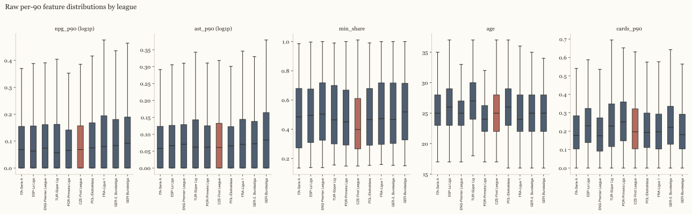
Co stažení udělá s hráčem s málo minutami: na vstupním prahu nese ligový medián stále většinu váhy; míra hráče Antonín Růsek se posunula nejvíc ze všech hráčů Česka tuto sezónu.
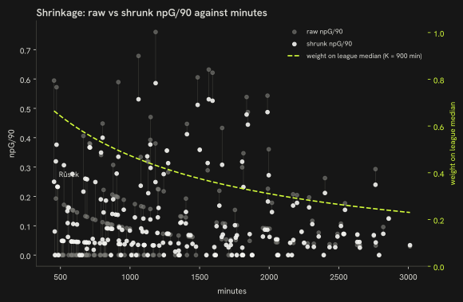
Ligové násobičky (quality projekce)
npG/90_quality = npG/90_shrunk × m_liga
Liga
Násobička
ENG-Premier League
1,000
ITA-Serie A
0,856
ESP-La Liga
0,807
GER-Bundesliga
0,788
FRA-Ligue 1
0,666
POR-Primeira Liga
0,630
BEL-Pro League
0,573
NED-Eredivisie
0,510
TUR-Süper Lig
0,484
GER-2. Bundesliga
0,473
POL-Ekstraklasa
0,438
CZE-First League
0,434
NOR-Eliteserien
0,374
DEN-Superliga
0,371
SUI-Super League
0,293
AUT-Bundesliga
0,268
HUN-NB I
0,265
CRO-HNL
0,249
SVK-Super Liga
0,217
Metoda: uefa_coefficient. ClubElo bylo v době běhu nedostupné (chyba HTTP); náhradou je mužský koeficient asociací UEFA z Wikipedie, aktuální pětiletý žebříček (sezóny 2022–23 až 2026–27). Násobička 1. ligy = koef[země] / max(koef); násobička 2. ligy = 0,6 × násobička 1. ligy téže země (uvedený předpoklad, ne odvozený z dat). Nejsilnější země 1. ligy = 1,00. Analýza citlivosti níže ukazuje robustnost pořadí vůči ±20 % na kterékoli jedné násobičce.
Síla ligy: dva odhady
Sezóna v jedné lize automaticky neznamená totéž co sezóna v jiné: góly a asistence přicházejí v některých soutěžích snáz než v jiných. Tahle sekce spočítá směnný kurz mezi ligami tak, že sleduje stejné hráče před a po změně ligy — podobně jako trenér posuzuje nový přestup podle toho, jak se jeho výkon změní v novém klubu.
Kolik je sezóna Czech First League hodná v přepočtu na Premier League? Násobička UEFA výše odpovídá z kontinentálních výsledků zemí; tento model odpovídá na stejnou otázku od hráčů, kteří ligu skutečně změnili.
Movers — 2125 hráčů pozorovaných aspoň ve dvou ligách napříč 8108 kvalifikujícími hráčskými sezónami — kotví model, protože jen vlastní změna ligy hráče před/po odděluje jeho úroveň od skórovacího prostředí ligy. Hierarchický Poissonův model neproniknutých gólů plus asistencí na 90 minut (Gelman et al., 2013) fituje efekt ligy a efekt hráče společně, vzorkovaný NUTS (Hoffman and Gelman, 2014) v PyMC (Abril-Pla et al., 2023) a diagnostikovaný ArviZ (Kumar et al., 2019). Partial pooling drží efekty lig regularizované, zatímco efekty hráčů nechává blízko nepoolovaným — stejná within-subject logika, jaká stojí za plus-minus a RAPM hodnocením jinde v týmových sportech (Kharrat, McHale and Peña, 2020; Hvattum, 2019).
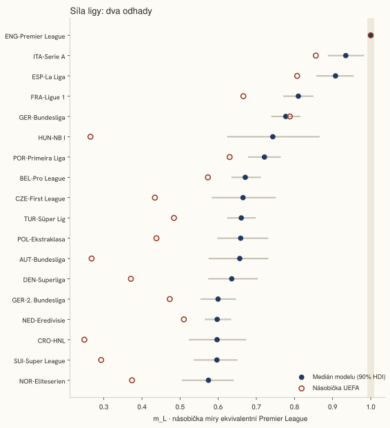
V těchto pojmech se sezóna Czech First League přepočítává na 0,67 sezóny Premier League (90% HDI 0,59–0,75).
Liga
m_L (medián)
90% HDI
Přestupy
UEFA
ENG-Premier League
1,000
1,000–1,000
588
1,000
ITA-Serie A
0,935
0,890–0,981
569
0,856
ESP-La Liga
0,908
0,859–0,953
435
0,807
FRA-Ligue 1
0,810
0,772–0,848
672
0,666
GER-Bundesliga
0,777
0,741–0,814
588
0,788
HUN-NB I
0,743
0,625–0,864
35
0,265
POR-Primeira Liga
0,721
0,680–0,762
350
0,630
BEL-Pro League
0,671
0,637–0,710
474
0,573
CZE-First League
0,665
0,585–0,749
64
0,434
TUR-Süper Lig
0,660
0,625–0,696
472
0,484
POL-Ekstraklasa
0,659
0,599–0,729
131
0,438
AUT-Bundesliga
0,657
0,576–0,729
80
0,268
DEN-Superliga
0,635
0,576–0,702
117
0,371
GER-2. Bundesliga
0,600
0,555–0,645
230
0,473
NED-Eredivisie
0,597
0,567–0,632
387
0,510
CRO-HNL
0,597
0,525–0,671
64
0,249
SUI-Super League
0,597
0,538–0,649
128
0,293
NOR-Eliteserien
0,574
0,507–0,639
64
0,374
Přefitovaný na sezóny před 2025/26 model predikuje první řádek 2025/26 každého movera po změně ligy — 863 takových přesunů — proti dvěma základním liniím: stejná míra jako předtím a tato míra škálovaná poměrem násobiček UEFA. Je to stejná populace, jakou sledují měsíční reporty expatriotských hráčů CIES Football Observatory (Poli, Ravenel and Besson, 2024).
Metoda
Log prediktivní hustota
MAE (míra)
Stejná míra jako předtím
−2,628
0,137
Míra × poměr UEFA
−2,734
0,151
Model
−2,174
0,127
Na 18 společných ligách korelují modelové mediány a násobičky UEFA se Spearmanovým rho = 0,74.
HUN-NB I: pořadí modelu 6 vs. pořadí UEFA 17 (m_L 0,74 vs. násobička 0,27).
NED-Eredivisie: pořadí modelu 15 vs. pořadí UEFA 8 (m_L 0,60 vs. násobička 0,51).
NOR-Eliteserien: pořadí modelu 18 vs. pořadí UEFA 13 (m_L 0,57 vs. násobička 0,37).
R-hat ≤ 1,003, minimální bulk ESS 1224, 0 divergentních tranzicí napříč 8108 hráčskými sezónami od 2125 moverů; fit za 228 s.
Posteriorní prediktivní kontrola
Pozorované vs. replikované neproniknuté góly plus asistence na hráčskou sezónu (Vehtari, Gelman and Gabry, 2017): podíl nul 15 % vs. 14 %, průměr 4,45 vs. 4,45, 90. percentil 11,00 vs. 10,85.
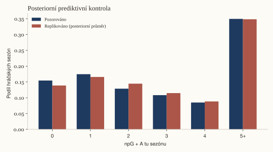
Co movers neukazují: nejsou náhodný vzorek — hráči obvykle odcházejí nahoru, když jsou dobří, a dolů, když stárnou — takže vnitrohráčský kontrast popisuje rozdíl lig pro typ hráče, který ligu mění, a věkový člen absorbuje jen tu část selekce, která je věk. Interval je nejistota modelu, ne selekce.
Žebříčky reportu drží násobičku UEFA koeficientu po celou dobu; model výše je ukázaný vedle ní jako kontrola vlastního předpokladu té násobičky — že kontinentální výsledky sledují sílu hráčů — ne jako její náhrada.
Tři modely, jeden úkol, pět sezón
Tady klademe jednoduchou otázku pěti různým metodám: podle čísel hráče v této sezóně, jak dobře každá z nich odhadne jeho čísla v příští sezóně. Každá metoda je testovaná jen na sezónách, které ještě neviděla — podobně jako úsudek skauta se počítá jen za to, co předpoví před začátkem sezóny, ne po jejím konci.
Co nám sezóna hráče řekne o té příští, s ohledem na to, kde hraje, kolik mu je a — u exportů — v jakém věku odešel? V modelovém vyjádření: predikovat hráčovu ligou upravenou produkci v příští sezóně (neproniknuté góly plus asistence na 90 minut, upravené o kvalitu) z čísel této sezóny, pro každou hráčskou sezónní dvojici s aspoň 450 minutami v obou sezónách, každou národnost v korpusu.
Vyhodnoceno rolling-origin křížovou validací (Hyndman and Athanasopoulos, 2021): pro každou z 5 cílových sezón po řadě trénuje každý model jen na dvojicích, jejichž cílová sezóna přišla dřív, a je testován na dvojicích té sezóny — stejná disciplína, jakou používá prognostik, když je budoucnost v době fitu opravdu neznámá, a to, co dělá tabulku níže po sezónách skutečným čtením „výkonu v čase“, ne jedním smíšeným číslem. Dvě základní linie — persistence (příští sezóna = tato sezóna) a shrinkage k ligovému průměru — stojí vedle tří fitovaných modelů se stejnými osmi rysy: hierarchická bayesovská regrese (target ~ Normal(μ, σ), partial pooling na lize a hráči, NUTS, 2 řetězce × 400 vzorků na origin (Gelman et al., 2013)), gradient-boosted regresor a malý vícevrstvý perceptron (scikit-learn (Pedregosa et al., 2011), skryté vrstvy 64/32 — malý MLP, ne embedding model: PyTorch není součástí tohoto pipeline). Trénovací řádky bayesovského modelu jsou subsamplované na nejvýš 2500 na origin, aby se fity pěti origins vešly do rozpočtu běhu; ostatní čtyři modely trénují na plném splitu. Cíl je upravený násobičem ligy, ve které hráč hraje příští sezónu; featury znají jen letošní ligu, takže přestup je změna, kterou žádný z modelů nevidí dopředu — omezení společné všem pěti.
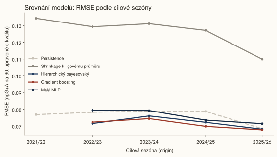
Model
2021/22
2022/23
2023/24
2024/25
2025/26
Souhrn
Persistence
0,0768 (0,054)
0,0782 (0,056)
0,0789 (0,056)
0,0787 (0,057)
0,0684 (0,048)
0,0754 (0,053)
Shrinkage k ligovému průměru
0,1343 (0,104)
0,1293 (0,100)
0,1311 (0,098)
0,1271 (0,098)
0,1099 (0,089)
0,1247 (0,097)
Hierarchický bayesovský
—
0,0715 (0,053)
0,0760 (0,054)
0,0722 (0,053)
0,0681 (0,052)
0,0714 (0,053)
Gradient boosting
—
0,0723 (0,051)
0,0744 (0,051)
0,0698 (0,051)
0,0677 (0,051)
0,0706 (0,051)
Malý MLP
—
0,0794 (0,059)
0,0792 (0,057)
0,0735 (0,054)
0,0714 (0,054)
0,0753 (0,056)
Každá buňka: RMSE (MAE), v ligou upravených npG+A na 90 minut. Trénovací množina první origin je prázdná z konstrukce — nejstarší sezóna s rysy v korpusu nemá dřívější cílovou sezónu, na které by se dalo trénovat — proto jsou u ní uvedené jen dvě základní linie.
90% predikční interval bayesovského modelu pokryl pozorovanou hodnotu 91 % případů, souhrnně napříč 4 origins, na které byl fitovaný (2022/23: 90 %, 2023/24: 90 %, 2024/25: 91 %, 2025/26: 93 %).
Podle souhrnného RMSE vyhrává Gradient boosting (0,071 vs. 0,075 u persistence, o 6 % nižší).
Nejvýraznější posun RMSE vítěze mezi sezónami je mezi 2023/24 a 2024/25 (0,005) — přesně ten typ driftu, který tato rolling-origin tabulka má odhalit.
Datace zlomu a jedna prognóza
Tahle sekce hledá sezónu, kdy se počet hráčů domácí země v pěti největších ligách Evropy přestal zvyšovat a usadil se na nižší úrovni, a dává pravděpodobnost tomu, že je to skutečný bod zlomu, ne jen obyčejný propad. Dělá také jednu prognózu na příští sezónu — jako ukázku metody, ne předpověď o žádném hráči.
Řada je modelována jako lokální úroveň ve stavovém prostoru (Durbin and Koopman, 2012): logaritmus sezónního počtu následuje Gaussovu náhodnou procházku (σ ~ HalfNormal(0,2)), plus jeden skokový posun δ v úrovni v neznámé sezóně zlomu τ. NUTS vzorkuje jen spojité parametry, takže τ se nevzorkuje přímo — každá kandidátní sezóna vzdálená alespoň 3 sezón od obou konců je z modelu marginalizována jedním log-sum-exp potenciálem a její posterior se dopočítá až ze spojitých vzorků, standardní postup pro marginalizovaný diskrétní parametr (Gelman et al., 2013); samotná myšlenka bodu zlomu pochází od (Adams and MacKay, 2007), zde použitá na dávkové nastavení s jedním zlomem. Rolling-origin zpětný test (Hyndman and Athanasopoulos, 2021) přeučí stejnou lokální úroveň bez skoku na každém z 15 počátků, předpovídá jednu sezónu dopředu a hodnotí proti naivnímu základu „stejně jako minulou sezónu“ — poctivý pohled prognostika, protože žádný skutečný počátek dopředu neví, na které straně zlomu se nachází. Jedna prognóza níže, ze stejného modelu bez bodu zlomu vyladěného na celé řadě, je demonstrací metody na počtu hráčů, ne výrokem o žádném hráči.
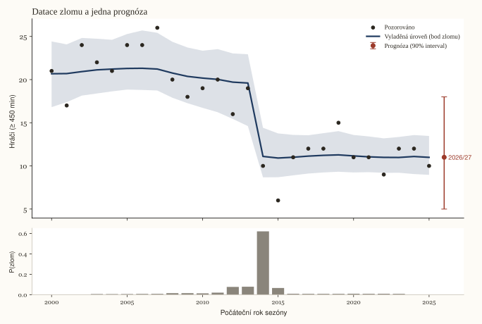
Sezóna zlomu a její posteriorní pravděpodobnost, vyznačené na křivce.
Pro Česko model datuje zlom do sezóny 2014/15 (62 % posteriorní pravděpodobnost), změna úrovně o ×0,57 (0,38–0,86, 90% HDI); vlastní inovační měřítko náhodné procházky je σ = 0,049.
2014/15: 62 %
2013/14: 8 %
2012/13: 8 %
Stejný model, samostatně vyladěný pro obě srovnávací země:
Jednokrokový rolling-origin zpětný test čisté lokální úrovně (bez bodu zlomu) proti naivnímu základu „stejně jako minulou sezónu“, 15 počátků od 2010/11 do 2024/25:
Počátek
Předpovídaná sezóna
Skutečnost
Medián modelu (90% interval)
Naivní
2010/11
2011/12
20
20 (13–31)
19
2011/12
2012/13
16
21 (12–30)
20
2012/13
2013/14
19
20 (12–29)
16
2013/14
2014/15
10
20 (12–29)
19
2014/15
2015/16
6
17 (9–25)
10
2015/16
2016/17
11
12 (5–20)
6
2016/17
2017/18
12
11 (6–19)
11
2017/18
2018/19
12
12 (5–20)
12
2018/19
2019/20
15
12 (6–20)
12
2019/20
2020/21
11
13 (6–23)
15
2020/21
2021/22
11
12 (6–21)
11
2021/22
2022/23
9
12 (6–19)
11
2022/23
2023/24
12
11 (5–19)
9
2023/24
2024/25
12
11 (5–19)
12
2024/25
2025/26
10
12 (6–19)
12
Souhrnně přes 15 počátků: MAE 2,80 pro model proti 2,73 pro naivní základ, 87 % z 90% intervalů pokrylo pozorovanou hodnotu.
Jediná prognóza, pro příští sezónu (2026/27), ze stejného modelu bez bodu zlomu vyladěného na celé řadě:
Země
Sezóna
Medián
90% interval
Česko
2026/27
11
5–18
Dánsko
2026/27
35
22–51
Chorvatsko
2026/27
24
14–35
Demonstrace metody na počtu hráčů, ne výrok o žádném hráči.
Tahle sekce se ptá, jestli vzorec z trychtýře výše — země, které dávají mladým hráčům doma víc minut, mají obvykle hlubší fond v nejsilnějších ligách — platí napříč celou srovnávací sadou zemí, ne jen u dvou ukázaných dřív. Dvě sezóny a hrstka zemí je malý vzorek, takže rozpětí kolem odhadu je široké.
Za každou z 8 peer zemí průměr přes 2024/25 → 2025/26 u podílu minut domácí ligy odehraných hráči do 21 let (x) proti průměru přes 2024/25 → 2025/26 u hráčů na milion v top-9 ligách (y) — jeden řádek na zemi. Bayesovská jednoduchá regrese, y ~ Normal(α + β·x, σ), slabě informativní priory (4 řetězce × 1000 vzorků (Abril-Pla et al., 2023)), odpovídá na otázku mezi zeměmi, kterou pokládá slide 3: má země s vyšším průměrným podílem do 21 let v průměru i hlubší fond (Gelman et al., 2013). Srovnáno s prostým poolovaným sklonem metodou nejmenších čtverců na celém dvousezónním panelu (numpy polyfit, bez struktury podle země, 1000 percentilových bootstrapových převzorkování — statsmodels zde není závislostí), který by měl souhlasit ve znaménku. Dvě sezóny na zemi (předchozí a metrická; běžící sezóna je neúplná a je vynechaná); peer země, jejíž nejvyšší soutěž FBref nesleduje, v panelu chybí — proto může být n menší než počet peer zemí.
β = +10,11 na 10 procentních bodů podílu hráčů do 21 let (90% HDI −1,69–23,26), R² = 0,27; OLS na stejných 8 zemních průměrech vychází blízko, na +10,65 (−3,85–20,33), a poolovaný OLS sklon souhlasí ve znaménku na +7,76 (1,12–13,99). n = 8; interval je široký, protože panel je malý.
Samostatná kontrola: stejná regrese, ale s náhodným interceptem za zemi, fitovaná na celém dvousezónním panelu místo na zemních průměrech. Změny uvnitř země napříč dvěma sezónami nenesou žádný signál — β_within = −0,16 na 10 procentních bodů (90% HDI −2,53–2,17), n = 16 zemí-sezón (R-hat ≤ 1,004, minimální bulk ESS 851, 0 divergentních tranzicí; posteriorní medián měřítka interceptu za zemi σ_country = 5,19). Při pouhých dvou sezónách na zemi intercept pohltí téměř celý mezistátní vzorec, který izoluje fit výše, takže tento odhad je tažený jen šumem mezi sezónami; uvedeno jako kontrola robustnosti, ne jako druhé hlavní číslo.
Pouze popisné: průměrný podíl minut dané země a její průměrný počet na obyvatele jsou ukázány spolu proto, že jde o čísla, která máme k dispozici, ne proto, že by jedno tvrzeně způsobovalo druhé.
Řádky panelu (n = 16)
Země
Sezóna
Podíl do 21 let
Na milion
CRO
2024/25
12,8 %
15,54
DEN
2024/25
13,2 %
13,42
NOR
2024/25
10,5 %
9,01
SUI
2024/25
9,2 %
5,36
AUT
2024/25
6,4 %
5,02
CZE
2024/25
11,1 %
2,20
HUN
2024/25
12,2 %
1,36
POL
2024/25
12,5 %
1,26
DEN
2025/26
15,3 %
12,58
CRO
2025/26
14,0 %
12,18
NOR
2025/26
11,5 %
9,37
SUI
2025/26
7,7 %
6,03
AUT
2025/26
9,2 %
4,80
CZE
2025/26
6,3 %
2,39
HUN
2025/26
14,1 %
1,57
POL
2025/26
9,3 %
1,23
Z čeho se rozdíl skládá
Rozdíl mezi domácí zemí a srovnávací zemí, v hráčích na milion, lze rozdělit na části, které souvisí se třemi věcmi, které tento report už měří: kolik hrají mladí hráči doma, jak silná je domácí liga a v jakém věku hráči odcházejí do zahraničí. To neříká, která ze tří rozdíl způsobuje, jen kolik se s každou z nich pohybuje společně — podobně jako si trenér může všimnout, že slabá sezóna souvisí s vlnou zranění, aniž by tvrdil, že zranění jsou jediné vysvětlení.
Ridge regrese (α = 1,00, standardizované kanály, převedené zpět do původních jednotek) hráčů na milion v top-9 ligách na třech kanálech — podíl minut do 21 let v domácí lize, síla domácí ligy (m_L z M2 tam, kde je nejvyšší soutěž dané země v souboru fitovaném tímto modelem, jinak násobička podle UEFA koeficientu (v tomto běhu použila každá země odhad z modelu)) a mediánový věk exportu (nedávní hráči, nebo celkový medián pro zemi bez nedávných exportů) — napříč 8 peer zeměmi s daty pro všechny tři kanály, sezóna metriky. Pro jednu srovnávanou zemi najednou rozdělí vlastní predikce fitovaného modelu rozdíl přesně na jeden člen za kanál — lineární forma Blinder-Oaxaca rozkladu mzdového rozdílu (Oaxaca, 1973; Blinder, 1973), zde aplikovaná na počet hráčů na obyvatele. Tři lineární kanály znamenají, že tento rozklad je ekvivalentní Shapleyho hodnotám: Shapleyho hodnota aditivního členu v lineárním modelu se rovná příspěvku jeho vlastního koeficientu, takže permutační mechanismus není implementovaný. Reziduum je vše, co tyto tři kanály nepokrývají.
Srovnání
Kanál
Příspěvek
Podíl na rozdílu
90% interval
Norsko Rozdíl (hráči na milion): +6,98
Minuty do 21 let
+4,22
60 %
+1,22 – +5,91
Síla ligy
+5,12
73 %
+1,90 – +6,77
Věk exportu
0,00
0 %
0,00 – 0,00
Reziduum
−2,37
—
—
Dánsko Rozdíl (hráči na milion): +10,19
Minuty do 21 let
+7,35
72 %
+2,17 – +10,27
Síla ligy
+1,67
16 %
+0,65 – +2,26
Věk exportu
0,00
0 %
0,00 – 0,00
Reziduum
+1,17
—
—
Bootstrapové 90% intervaly na příspěvku každého kanálu, 1000 převzorkování řádků panelu (model se přeučí na každém převzorkování; vlastní hodnoty domácí a srovnávané země zůstávají fixní); samotné reziduum se nebootstrapuje — je to rozdíl vlastních pozorovaných počtů obou zemí minus fitovaný rozdíl.
Rozklad korelace, kterou tento panel ukazuje, ne kauzální účetnictví; s n = 8 a třemi vzájemně korelovanými kanály na úrovni státu jsou podíly orientační, ne přesné. Podíl kanálu na rozdílu se zobrazuje jen tehdy, když je samotný rozdíl aspoň 3 hráčů na milion — pod touto hranicí může malý jmenovatel poslat podíl přes 100 % oběma směry; samotný příspěvek v hráčích na milion se uvádí vždy.
Věk exportu
Hráči, kteří odejdou do zahraničí mladší, mívají tam pak vyšší produkci, ale neznamená to nutně, že mladý odchod kariéře pomáhá: kluby jsou taky ochotnější vsadit na hráče, kterého už v mladším věku hodnotí vysoko. Tahle sekce na ten vzorec proloží křivku a snaží se přitom držet sílu hráčovy původní ligy pevnou, ale obě vysvětlení úplně rozlišit nedokáže.
Pro každého hráče peer národnosti (včetně domácí země), jehož první sezóna v top-9 lize spadá do staženého okna a není cenzurovaná (stejné pravidlo cenzurování jako u „Kam čeští hráči odcházejí?“, zde znovu použité) — 115 hráčů, věk 17–31 — je věk při té sezóně modelován proti ligově upravené produkci za první jednu nebo dvě sezóny hráče v top-9. f(věk) je přirozený kubický spline s uzly na 19, 21, 23 a 25 (prostá kvadratická funkce pod n = 150; zde byla použita větev kvadratická funkce), spolu se silou výchozí ligy (model transferového grafu, § Síla ligy), postem a partial-pooled efektem země (Gelman et al., 2013), vzorkováno NUTS (Hoffman and Gelman, 2014), 4 řetězce × 1000 vzorků; každý sloupec designu i výstup byly před fitováním standardizovány — stejná lekce z panelu minut mládeže o priorech na surové škále u různě škálovaných proměnných.
Věk
Očekávané G+A/90 (medián)
90% HDI
19
0,14
0,12 – 0,16
21
0,14
0,13 – 0,16
23
0,14
0,12 – 0,16
25
0,14
0,12 – 0,16
27
0,14
0,12 – 0,16
β na jednotku síly ligy původu (m_L): −0,03 (−0,11–0,05).
Vlastní efekt země pro české exporty: 0,00 (−0,02–0,02); české exporty odcházejí v mediánovém věku 23.
Stejný model, fitovaný znovu bez síly výchozí ligy: měřítko efektu země (σ_n) je 0,135 s ligovým členem v modelu a 0,139 bez něj — to, co se mezi nimi mění, je to, co ligový člen pohlcuje.
Leave-one-nation-out: po vyloučení 8 vlastních exportů Česka (n = 107 zbývá) a přefitování je rozdíl 21 vs. 24 0,00 (−0,01–0,01), oproti 0,00 v plném fitu.
Posteriorní prediktivní kontrola
Pozorované vs. replikované y (průměrné ligově upravené G+A/90 za první dvě sezóny v top-9): průměr 0,14 vs. 0,14, sd 0,10 vs. 0,10, 10. percentil 0,02 vs. 0,01, 90. percentil 0,27 vs. 0,28.
R-hat ≤ 1,002, minimální bulk ESS 1190, 0 divergentních tranzicí napříč 115 hráči; fit za 5,5 s.
Co tento model neodděluje: korpus není náhodný vzorek hráčů, kteří mohli odejít později. Hráči, kteří odcházejí dříve, bývají ti, které týmy považují za připravené nejdříve — selekční efekt, který věková křivka mísí s jakýmkoliv skutečným vývojovým efektem raného odchodu, a tento report se je nesnaží rozlišit.
Bayesovský shrinkage
Míry na 90 minut u hráčů s málo minutami jsou staženy k mediánu jejich ligy a sezóny (hráči s aspoň 900 minutami) empirickým Bayesovým vzorcem (Efron and Morris, 1975), s K = 10 fantomovými zápasy vyjádřenými jako 900 minut:
shrunk_rate = (události + K × medián_ligy) / (minuty / 90 + K), K = 10
Při 450 minutách (vstupní práh) nese medián ligy 67 % váhy; při 900 minutách váží vlastní míra hráče a medián stejně. Podíl minut a věk se nestahují.
Brankáři se počítají stejně jako hráči v poli všude v tomto reportu, s jedním rozdílem: protože brankářova čísla obdržených gólů se hodně mění zápas od zápasu, model potřebuje větší vzorek střel, než začne věřit brankářovým vlastním číslům víc než ligovému průměru.
Brankářské míry (protipříklad z kapitoly II) používají stejný vzorec. Obdržené góly/90 a zákroky/90 se stahují k mediánu ligy a sezóny se stejným K = 900 minut a obdržené góly/90 jsou pak upravené o násobičku ligy — obdržený gól v silnější lize se počítá méně. Úspěšnost zákroků se stahuje stejně, ale proti počtu střel na bránu, ne minutám: počet střel za jednu sezónu je zpravidla hluboko pod K = 900, takže save_pct_shrunk se u téměř každého brankáře stáhne blízko k mediánu ligy — vypovídavější je tam velký rozdíl v syrové, nestažené úspěšnosti zákroků.
PCA loadings
Jeden pětifeaturový vektor na post (npg_p90, ast_p90, min_share, age, cards_p90), standardizovaný, redukovaný na dvě komponenty na projekci. Style používá stažené míry; quality míry nejdřív násobí ligovou násobičkou.
Tabulka loadings
Skupina
Projekce
PC
% rozptylu
npG/90
A/90
podíl min
věk
cards/90
FW
style
PC1
25,2 %
0,533
0,215
0,651
0,430
−0,246
FW
style
PC2
23,6 %
−0,206
−0,271
−0,120
0,823
0,439
FW
quality
PC1
28,9 %
0,636
0,380
0,482
0,217
−0,415
FW
quality
PC2
24,9 %
−0,108
−0,114
0,133
0,910
0,361
MF
style
PC1
29,5 %
0,597
0,601
0,383
0,073
−0,361
MF
style
PC2
23,2 %
−0,245
−0,117
0,484
0,828
0,082
MF
quality
PC1
30,0 %
0,590
0,608
0,382
0,133
−0,344
MF
quality
PC2
24,2 %
−0,244
−0,199
0,490
0,809
0,087
DF
style
PC1
25,0 %
0,546
0,429
0,505
0,183
−0,480
DF
style
PC2
21,1 %
−0,343
−0,378
0,278
0,804
−0,128
DF
quality
PC1
25,8 %
0,432
0,356
0,578
0,327
−0,496
DF
quality
PC2
21,7 %
−0,462
−0,375
0,104
0,797
−0,023
Analýza citlivosti (násobičky ±20 %)
Pro každý scénář bylo přepočítáno kvalitou upravené pořadí hráčů s příslušností Česka v rámci každého postu a srovnáno se základem; „top-10“ je sjednocení vlastních prvních desítek 3 skupin (30 hráčů v základu). Z 41 scénářů 37 nemění v této množině nikoho; největší churn je 1 (násobička CZE-First League −20 %, průměrný posun pořadí 0,88 v první dvacítce)*.
Tabulka scénářů
Scénář
Popis
Překryv top-10
Churn top-10
Průměrná Δ pořadí (top 20)
baseline
současné násobičky z config/league_quality.yaml
30 / 30
0
0,00
ENG-Premier League_minus20
násobička ENG-Premier League −20 %
30 / 30
0
0,10
ENG-Premier League_plus20
násobička ENG-Premier League +20 %
30 / 30
0
0,07
ITA-Serie A_minus20
násobička ITA-Serie A −20 %
30 / 30
0
0,00
ITA-Serie A_plus20
násobička ITA-Serie A +20 %
30 / 30
0
0,00
ESP-La Liga_minus20
násobička ESP-La Liga −20 %
30 / 30
0
0,00
ESP-La Liga_plus20
násobička ESP-La Liga +20 %
30 / 30
0
0,00
GER-Bundesliga_minus20
násobička GER-Bundesliga −20 %
30 / 30
0
0,13
GER-Bundesliga_plus20
násobička GER-Bundesliga +20 %
30 / 30
0
0,20
FRA-Ligue 1_minus20
násobička FRA-Ligue 1 −20 %
30 / 30
0
0,00
FRA-Ligue 1_plus20
násobička FRA-Ligue 1 +20 %
30 / 30
0
0,03
NED-Eredivisie_minus20
násobička NED-Eredivisie −20 %
30 / 30
0
0,20
NED-Eredivisie_plus20
násobička NED-Eredivisie +20 %
29 / 30
1
0,23
POR-Primeira Liga_minus20
násobička POR-Primeira Liga −20 %
30 / 30
0
0,00
POR-Primeira Liga_plus20
násobička POR-Primeira Liga +20 %
30 / 30
0
0,00
BEL-Pro League_minus20
násobička BEL-Pro League −20 %
30 / 30
0
0,00
BEL-Pro League_plus20
násobička BEL-Pro League +20 %
30 / 30
0
0,02
TUR-Süper Lig_minus20
násobička TUR-Süper Lig −20 %
30 / 30
0
0,13
TUR-Süper Lig_plus20
násobička TUR-Süper Lig +20 %
30 / 30
0
0,05
CZE-First League_minus20
násobička CZE-First League −20 %
29 / 30
1
0,88
CZE-First League_plus20
násobička CZE-First League +20 %
29 / 30
1
0,75
SVK-Super Liga_minus20
násobička SVK-Super Liga −20 %
30 / 30
0
0,00
SVK-Super Liga_plus20
násobička SVK-Super Liga +20 %
30 / 30
0
0,00
AUT-Bundesliga_minus20
násobička AUT-Bundesliga −20 %
30 / 30
0
0,00
AUT-Bundesliga_plus20
násobička AUT-Bundesliga +20 %
30 / 30
0
0,00
HUN-NB I_minus20
násobička HUN-NB I −20 %
30 / 30
0
0,00
HUN-NB I_plus20
násobička HUN-NB I +20 %
30 / 30
0
0,00
POL-Ekstraklasa_minus20
násobička POL-Ekstraklasa −20 %
29 / 30
1
0,37
POL-Ekstraklasa_plus20
násobička POL-Ekstraklasa +20 %
30 / 30
0
0,12
CRO-HNL_minus20
násobička CRO-HNL −20 %
30 / 30
0
0,00
CRO-HNL_plus20
násobička CRO-HNL +20 %
30 / 30
0
0,00
DEN-Superliga_minus20
násobička DEN-Superliga −20 %
30 / 30
0
0,00
DEN-Superliga_plus20
násobička DEN-Superliga +20 %
30 / 30
0
0,00
SUI-Super League_minus20
násobička SUI-Super League −20 %
30 / 30
0
0,00
SUI-Super League_plus20
násobička SUI-Super League +20 %
30 / 30
0
0,00
NOR-Eliteserien_minus20
násobička NOR-Eliteserien −20 %
30 / 30
0
0,00
NOR-Eliteserien_plus20
násobička NOR-Eliteserien +20 %
30 / 30
0
0,00
GER-2. Bundesliga_minus20
násobička GER-2. Bundesliga −20 %
30 / 30
0
0,00
GER-2. Bundesliga_plus20
násobička GER-2. Bundesliga +20 %
30 / 30
0
0,00
all_minus20
násobička každé ligy −20 %
30 / 30
0
0,00
all_plus20
násobička každé ligy +20 %
30 / 30
0
0,00
* Churn = členové základní top-10, kteří ve scénáři z množiny vypadnou; průměrná Δ pořadí = průměrná absolutní změna pořadí přes sjednocení základní top-20. Scénáře: základ, každá liga ±20 % zvlášť a všechny ligy ±20 % najednou.
Tabulka výše je fixovaná na násobičky z configu; panel níže je stejná první desítka hráčů s příslušností Česka udělaná interaktivní — táhněte posuvníkem kterékoli ligy (0,5× až 1,5× jejího výchozího násobku) a pořadí se přepočítá v prohlížeči.
#
Hráč
Liga
q
Vs. základ
Jak to víme Toto je výše uvedená offline tabulka citlivosti (§ Analýza citlivosti) udělaná interaktivní: q = (npG/90_shrunk + A/90_shrunk) × m_liga, přepočítáno na straně prohlížeče ze shrunk rates každého hráče s příslušností Česka v metrikové sezóně, bez volání serveru. Sloupec změny pořadí srovnává pořadí každého řádku při aktuálním nastavení posuvníků s jeho pořadím při výchozích hodnotách z configu.
Log kvality dat
7 přepočítaných kontrol · 6 zaznamenaných incidentů
Každé rozhodnutí při čištění dat, které změnilo nějaký počet, s tím počtem. První blok je přepočítán při každém běhu; druhý je záznam incidentů (data a počty tak, jak byly zaznamenány).
Kontrola
Počet
Co počítá
Odfiltrované ženské položky
92 položek
Položky na stránce země FBref vypuštěné pro příjmení končící na -ová (viz Limitace).
Jmenovci ve fondu
2 hráčů
Aktivní hráči fondu sdílející normalizované jméno (např. otec a syn), rozlišení podle klubu.
Hráči fondu bez sezónních tabulek
125 hráčů
Čeští profesionálové ze stránky země FBref hrající v lize bez sezónních tabulek, bez jakýchkoli metrik.
Sloučené rozdělené sezóny
441 řádků
Řádky hráč-sezóna-post sloučené do jednoho po přestupu uprostřed sezóny (minuty sečteny, míry vážené minutami).
Nespárovaná jména z nominací
18 jmen
Jména z tabulek reprezentačních nominací, která neodpovídají žádnému řádku Česka ve featurových tabulkách.
Chybějící ročník narození
0 řádků
Řádky sezónních tabulek národnosti CZE bez ročníku narození, ze kterých nejde sestavit player_key.
Nespárované řádky brankářů
12 řádků
Řádky ze stránek brankářů bez odpovídajícího řádku GK v sezónních tabulkách podle (liga, sezóna, klub, player_key); vypuštěné ze všech brankářských exhibitů.
2026-09-14 Zastaralý sezónní index FBref způsobil, že soccerdata stáhla URL bez sezóny, kterou FBref servíruje jako běžící sezónu: tabulky 2025/26 devíti lig byly po čtyřech kolech 2026/27. Opraveno kontrolou vlastního nadpisu stránky proti požadované sezóně. (9 lig, zaznamenáno)
2026-09-14 FBref občas servírovala jen soupisku (bez sezónní tabulky) pro sezónu, která ještě probíhá. Opraveno jedním opakovaným stažením v téže kontrole nadpisu stránky.
2026-09-13 API ClubElo odpovídalo 502 po celou dobu běhu; ligové násobičky spadly zpět na koeficienty asociací UEFA.
2026-09-13 Dotaz na portréty ve Wikidatech spároval jen podle jména, občanství a data narození; sedm portrétů patřilo jmenovcům z jiných sportů, dokud nebyl přidán filtr na povolání. (7 portrétů, zaznamenáno)
2026-09-13 Slovenská nejvyšší soutěž na FBref vůbec není; slovenské exhibity v tomto reportu proto stojí jen na hráčích v zahraničí.
2026-09-14 První out-of-sample srovnání modelu síly lig aplikovalo baseline s UEFA násobiči obráceně a obě baseline startovaly ze surové rate minulé sezóny (sezóna bez gólu předpovídala nulu); zachyceno v review. Opraveno: poměr násobičů m_prev / m_new, baseline ze shrunk rate. Náskok modelu před baseline klesl z asi 3 natů na 0,5 a to je číslo v reportu.
Limitace této analýzy
Ligy bez metrik
Pipeline stahuje z FBref 19 soutěží. 125 z 440 profesionálů Česka nalezených na stránce země FBref hraje v lize bez sezónních tabulek a nenese žádné metriky; jsou uvedeni jen jménem a klubem. Český druhý stupeň a slovenská nejvyšší soutěž na FBref vůbec nejsou; slovenské exhibity v kapitole II proto stojí na jeho hráčích v zahraničí.
Featury z bezplatné vrstvy
Vektor featur je pět základních sloupců na 90 minut: góly ze hry, asistence, podíl minut, věk a karty. Žádné očekávané góly, žádné progresivní přihrávky, žádné skluzy — pravidlem byl jeden identický vektor napříč každou ligou korpusu a pro všechny je dostupná jen základní tabulka. Defenzivní a kreativní příspěvek nad rámec asistencí je pro mapu neviditelný.
Zdroj reprezentačního příznaku
Příznak „nominován 2024–26“ je parsovaný z tabulek nominací na Wikipedii (2024–25 Nations League, 2026 FIFA World Cup, 2026 World Cup qualification, UEFA Euro 2024, UEFA European Under-21 Championship 2025) a spárovaný podle normalizovaného jména a ročníku narození. Nese ho 60 z 192 zmapovaných hráčů. Editace tabulky nebo varianta jména může nominaci vypustit; příznak je štítek, ne počet startů.
Pokrytí fotografiemi
121 z 440 hráčů fondu má portrét z Wikimedia Commons (Wikidata P18, spárováno podle jména, občanství a data narození, povolání filtrováno na fotbalistu), použitý na webu. Hráči bez portrétu mají na webu iniciály.
Rozdělení sezón
Hlavní počet na obyvatele i každá metrika používají kompletní sezónu 2025/26; trajektorie běží 2024/25 → 2025/26; klub na kartě je klub 2026/27 (sezóna probíhající v době sestavení).
Ligové násobičky
ClubElo bylo v době běhu nedostupné, takže násobičky jsou koeficienty asociací UEFA škálované na nejsilnější ligu = 1,00 a druhé ligy jsou předpokladem nastaveny na 0,6 × první liga téže země. Proxy síly klubu v kapitole II je percentil vstřelených gólů klubu v rámci jeho ligy, ne Elo rating. Tabulka citlivosti ukazuje, jak daleko chyba ±20 % v kterékoli jedné násobičce posune české pořadí.
Původ exportů jen z nedávných příchozích
Liga původu exportu je známá jen tehdy, když byla stažena sezóna před první sezónou v top-9 lize: od 2020/21 pro hlavní ligy, od 2024/25 pro domácí ligy peer zemí. Podíly původu a věk nedávného exportu se proto počítají přes hráče, jejichž první sezóna v top-9 lize je 2025/26 nebo 2026/27; dřívější příchozí se počítají do celkového věku exportu, ale ne do mixu původu, a první výskyt už v 2020/21 je cenzurovaný (cenzurovaný podíl je zobrazený).
Identita hráče
Sezónní tabulky FBref nenesou id hráče, takže hráči se spojují podle normalizovaného jména a ročníku narození napříč ligami a sezónami; dva hráči sdílející obojí by se sloučili do jednoho. Přestup uprostřed sezóny vytvoří dvě klubové řádky, které se před řazením sloučí do jedné vážené minutami.
Ženské položky a heuristika -ová
Stránka země FBref míchá mužské a ženské soutěže. Položky s příjmením končícím na -ová byly z fondu vypuštěny; žena s jinou koncovkou příjmení by filtrem prošla a muž s touhle koncovkou ne. Koncovka je specifická pro česká ženská příjmení, takže u národnosti, jejíž konvence pojmenování ji nepoužívá (například anglická), filtr zachytí jen zlomek kontaminace, na kterou cílí; počet u "Vyfiltrované ženské položky" v logu kvality dat níže udává, kolik jich zachytil při tomto běhu.
Žádné tržní hodnoty, žádný skauting
Přestupové částky, tržní hodnoty, video a skautské zprávy jsou mimo zde použité veřejné zdroje. Mapa popisuje statistické otisky a počty; nominační a rozvojová rozhodnutí vyžadují vlastní data a expertizu svazu, které tato metoda nemá.
Žádná eventová ani trackingová data
Každá featura tady je sezónní agregát z bezplatných tabulek FBref. Trackingová práce autorky žije jinde: tactical-cz (sledování hráčů z broadcast videa pro český fotbal) a hokejový video PoC odkazovaný z hockey.datasimply.eu. Nové sloupce přibývají ve src/features.py::per90 a v seznamu featur config/feature_definitions.yaml.
Validace a robustnost
Každý model v tomto pipeline nese vlastní validaci hned vedle svého popisu; tato sekce sbírá jednu hlavní diagnostiku od každého, jak přibývá. Zatím:
Srovnání modelů mezi sezónami (M1): rolling-origin vyhodnocení přes 5 sezón, souhrnné RMSE favorizuje Gradient boosting (0,071 vs. 0,075 u persistence), 90% interval bayesovského modelu pokryl 91 % pozorovaných hodnot.
Síla ligy (M2): R-hat ≤ 1,003, 0 divergentních tranzicí, out-of-sample log prediktivní hustota favorizuje „Model“ (−2,174), Spearmanovo rho = 0,74 proti násobičkám UEFA.
Zlom a prognóza (M4): zlom je datován do sezóny 2014/15 (62 % posterior) pro Česko, změna úrovně o ×0,57; čistá lokální úroveň nepřekonává naivní základ v MAE (2,80 vs. 2,73), 87 % z 90% intervalů pokrylo pozorovanou hodnotu napříč 15 rolling-origin zpětnými testy.
Panel minut mládeže (M3): napříč 8 zeměmi (zemní průměry, n = 8) je sklon mezi zeměmi +10,11 na 10 procentních bodů podílu do 21 let (−1,69–23,26), R² = 0,27; prostý poolovaný OLS sklon souhlasí ve znaménku na +7,76 (1,12–13,99) — interval je široký, protože panel je malý. Kontrola uvnitř země (fit s interceptem za zemi na celém dvousezónním panelu) nenachází žádný signál: β_within = −0,16.
Rozklad rozdílu (M5): ridge fit (α = 1,00) na n = 8 peer zemích; pro Norsko tvoří reziduum −2,37 z rozdílu 6,98 — rozklad korelace, ne kauzální účetnictví.
Věk exportu (M1 proper): R-hat ≤ 1,002, 0 divergentních tranzicí napříč 115 hráči; β na síle výchozí ligy je −0,03; vyloučení 8 exportů Česka a přefitování posune rozdíl 21 vs. 24 o +0,0007.
Reprodukovatelnost
Celá pipeline je veřejná: github.com/sandovabarbora/czefootball-player-pool-atlas. Licence MIT. Z čistého klonu uv sync && make restore-snapshot && make render vykreslí tento report z commitnutého datového snapshotu a make pages sestaví web; make all vše znovu stáhne a spustí celou pipeline. Náhodný seed 42 pro každý stochastický krok (KMeans). Fetchery cachují surové stránky a jsou idempotentní; krok renderu se nikdy nedotkne sítě.
Zpracované tabulky se beze změny nahrají i do BigQuery: infra/bigquery/ obsahuje generovaná schémata, skript bq load a kontrakt klíčů a jednotek pro JSON výstupy modelů, které tabulky nepokrývají. Příkaz infra/bigquery/load.sh -n <dataset> <nation> ukáže load příkazy bez jejich spuštění.
Jak report vznikl
Spec → plán → agenti na tasky → review → ledger · 25 rozhodnutí · 285 testů
Report vznikl agentním workflow: psaná specifikace návrhu, implementační plán malých úkolů, čerstvý coding agent na každý úkol, po každém kontrola souladu se specifikací a kvality kódu, na konci revize celé větve. Každé rozhodnutí, které controller udělal bez autorky, je datovaný ruling v ledgeru — 25 napříč touto a minulou edicí. Autorka napsala rámec, čtení clusterů a rulingy; agenti napsali kód pod 285 testy.
Implementace i review: sonnet · controller: opus.
Review je u každého úkolu dvoustupňový — nejdřív soulad se specifikací, pak kvalita kódu — a zjištění každého review se zapisují do ledgeru, ne jen verdikt: 40 řádků zmiňujících review napříč 34 úkoly této a minulé edice.
Metody níže formovaly návrh tohoto reportu. Každá položka uvádí, co metoda je, co si z ní report vzal a co vynechal a proč.
Jedno spojení zde nemá jedinou citaci za sebou: model síly ligy z transferového grafu (§ Síla ligy) a křivka věku exportu (§ Věk exportu) jsou fitované nezávisle a spojené jen přes sílu výchozí ligy jako kovariátu — model identifikace ligy uvnitř hráče krmící spline křivku produkce podle věku je, pokud autorka ví, vlastní kombinace tohoto reportu, nepřevzatá vcelku z žádné z metod níže.
Empirický bayesovský shrinkage řídké míry na jednotku směrem k průměru skupiny (Efron and Morris, 1975) · přebráno: rate na 90 minut se stahuje k mediánu ligy a sezóny s priorem K = 10 fantomových zápasů před projekcí kvality (§ Bayesovský shrinkage) · vynecháno: plně hierarchický odhad komponent rozptylu, který originální metoda také umožňuje, protože jedno sdílené K pokrývá minutový práh tohoto korpusu dostatečně pro popisný report.
Vícevrstvá (partial-pooling) regrese a posterior predictive checking jako rutina pro diagnostiku modelu (Gelman et al., 2013) · přebráno: modely síly ligy a panelu mládeže poolují ligy a země částečně místo fitování každé zvlášť nebo sloučení všech do jedné, a posterior predictive check u síly ligy (§ Síla ligy) srovnává simulovanou a pozorovanou produkci · vynecháno: srovnání modelů pomocí WAIC/LOO, protože každý model zde je místo toho hodnocen na sezónách, na kterých nikdy netrénoval (rolling-origin zpětné testy) — silnější kontrola pro účel tohoto reportu.
No-U-Turn Sampler, gradientová MCMC metoda, kterou PyMC používá jako výchozí (Hoffman and Gelman, 2014) · přebráno: každý bayesovský model v tomto reportu — síla ligy, srovnání modelů, sériový model zlomu, panel mládeže — je jí fitován a diagnostikován na R-hat a divergencích · vynecháno: variační inference jako rychlejší aproximativní alternativa, protože žádný ze čtyř modelů není natolik pomalý, aby ji potřeboval.
Plus-minus a regularizované adjusted plus-minus ratingy, které regresí izolují příspěvek hráče od spoluhráčů a soupeřů (Kharrat, McHale and Peña, 2020; Hvattum, 2019) · přebráno: logika modelu síly ligy uvnitř hráče — jen vlastní změna ligy hráče před a po odděluje jeho úroveň od skórovacího prostředí ligy — sleduje stejnou identifikační myšlenku, aplikovanou na ligy místo na spoluhráče · vynecháno: skutečný RAPM fit nad daty o sestavách, což sezónní tabulky tohoto korpusu (bez sestav, bez dat o držení míče) neumožňují.
Bayesovská online detekce bodu zlomu, sekvenční metoda pro lokalizaci zlomu v generujícím procesu dat (Adams and MacKay, 2007) · přebráno: myšlenka jednoho neznámého zlomového ročníku s marginalizovaným diskrétním parametrem polohy, aplikovaná zde na krátkou dávkovou řadu místo sekvenčně · vynecháno: online/sekvenční nastavení a vícenásobné body zlomu, protože daná řada (počet hráčů jedné země za sezónu) je krátká, pevná a věrohodně má nejvýš jeden strukturální zlom.
Model lokální úrovně — náhodná procházka plus šum pro pomalu driftující řadu — v tradici state-space (Durbin and Koopman, 2012) · přebráno: model bodu zlomu (§ Datace zlomu) je přesně tato lokální úroveň v logaritmickém prostoru s jednou přidanou skokovou změnou v bodě zlomu · vynecháno: lokální lineární trend nebo sezónní komponenta, protože řada je roční a příliš krátká na to, aby byl trendový člen identifikovatelný.
Rolling-origin (časová) křížová validace: refit na datech do každého počátku, hodnocení jen na tom, co přišlo po něm (Hyndman and Athanasopoulos, 2021) · přebráno: srovnání modelů (§ Tři modely, jeden úkol) i zpětný test bodu zlomu (§ Datace zlomu) jsou takto hodnoceny, nikdy na náhodném splitu, který by mohl propustit budoucí sezóny do trénování · vynecháno: varianty expanding-vs-sliding-window nad rámec jediného expanding-window schématu, protože pět metrikových sezón korpusu ponechává málo prostoru pro jejich srovnání.
Oaxaca–Blinderův rozklad, který dělí rozdíl mezi průměry dvou skupin na vysvětlenou a nevysvětlenou část pomocí lineárního modelu (Oaxaca, 1973; Blinder, 1973) · přebráno: exhibit rozkladu rozdílu (§ Z čeho se rozdíl skládá) dělí rozdíl na obyvatele stejně na tři měřené kanály plus reziduum · vynecháno: detailní rozklad vysvětlené části na úrovni koeficientů, protože tři kanály jsou dost málo na to, aby šly číst přímo z koeficientů.
Silhouette koeficient, míra na úrovni bodu, jak dobře clustering odděluje své skupiny (Rousseeuw, 1987) · přebráno: použito ke kontrole počtu PCA clusterů pro každou skupinu postů a projekci předtím, než byly zafixovány (§ Cluster archetypy) · vynecháno: silhouette sweep uvedený v textu, protože zvolené počty clusterů jsou stabilní napříč skupinami postů i projekcemi.
Gradient boosting stromy a malý multilayer perceptron, dva nebayesovské machine-learningové základy standardní pro tento typ srovnání (Pedregosa et al., 2011) · přebráno: oba stojí vedle modelů persistence, shrinkage a bayesovského v § Tři modely, jeden úkol, na stejných osmi featurech a stejném rolling-origin splitu · vynecháno: hledání hyperparametrů nad rámec výchozích hodnot scikit-learn (plus 64/32 skryté vrstvy MLP), protože smyslem srovnání je rodina modelů, ne vyladěný žebříček.
Pravidelné počty CIES Football Observatory fotbalistů hrajících mimo domovský svaz (Poli, Ravenel and Besson, 2024) · přebráno: out-of-sample kontrola síly ligy (§ Síla ligy) sleduje stejnou populaci — hráče, kteří změnili ligu — i když nepoužívá přímo počty CIES · vynecháno: vlastní čísla podílu expatriotů CIES jako uváděné číslo v tomto reportu, protože exhibity na obyvatele a cest do zahraničí už na stejnou otázku odpovídají z vlastních stažených tabulek hráčů tohoto reportu.
Další kroky, které nebyly podniknuty
Embeddingy hráč-sezóna a grafové metody nad transferovou sítí — kluby a přestupy jako graf, hráči jako uzly s naučenou reprezentací — jsou přirozeným dalším nástrojem (konkrétně grafové neuronové sítě) pro fond této velikosti, ale nebyly zde vyzkoušeny.
Featury odvozené z eventů a trackingu (intenzita presinku, progresivní vedení míče, expected threat) by zostřily osu stylu nad rámec pěti box-score čísel použitých zde, ale pro tento korpus nebyl k dispozici žádný zdroj trackingových dat.
Slovníček pojmů
Deset pojmů použitých v sekcích výše, každý v jedné prosté větě s fotbalovým příkladem.
Na 90 minut
Míra přepočtená na celý zápas: hráč se třemi góly v pěti zápasech, každý odehraný celých devadesát minut, má míru 0,6 gólu na 90 minut — umožňuje to spravedlivě srovnat hráče, který nastoupil jako střídající, s tím, kdo odehrál každý zápas od začátku.
Podíl minut
Kolik z dostupného herního času klubu hráč skutečně dostal, ze všech minut, které zápasy klubu tu sezónu mohly nabídnout; hráč, který odehrál každou minutu každého zápasu, má podíl minut 100 procent.
Stahování (shrinkage)
Způsob, jak nedůvěřovat malému vzorku příliš: hráči s jen hrstkou zápasů se jeho čísla částečně přitáhnou k typickému číslu ligy — podobně jako trenér počká na víc než jeden dobrý zápas, než uvěří, že forma mladého hráče je skutečná.
Ligová násobička / síla ligy
Číslo, které říká, kolik je gól, asistence nebo minuta hodná v jedné lize ve srovnání s jinou; útočníkův gól ve slabší lize se počítá míň, jakmile se upraví násobičkou té ligy — stejná myšlenka jako posuzovat přestup podle úrovně, ze které hráč přichází.
Kvalitou upravené
Hráčova syrová čísla poté, co se vynásobí ligovou násobičkou výše, takže se dá míra vydělaná v silné lize a míra vydělaná ve slabší lize srovnat na stejném základě.
Interval (90 %)
Rozpětí kolem čísla, které ukazuje, jak moc si je model jistý, ne jeden odhad; devadesátiprocentní interval znamená, že model si myslí, že skutečná hodnota padne do toho rozpětí zhruba devětkrát z deseti.
Posterior
Co si model o čísle myslí poté, co viděl data, vyjádřené jako rozpětí věrohodných hodnot, ne jedno jediné číslo; pravděpodobnost přiřazená sezóně zlomu v tomto reportu je posteriorní pravděpodobnost.
Mimo vzorek (out-of-sample)
Ověření metody jen na zápasech, hráčích nebo sezónách, které při stavbě metody neviděla — podobně jako trenér posuzuje skautskou zprávu podle toho, co se skutečně stane, jakmile hráč podepíše, ne podle toho, jak dobře zpráva popsala, co se už stalo.
Cluster
Skupina hráčů, jejichž sezónní čísla si jsou navzájem podobná a liší se od jiných skupin, nalezená automaticky z dat, ne přiřazená ručně; cluster je stylový štítek jako „vysokoobjemoví střelci“, ne formální post.
Bod zlomu
Místo v řadě sezón, kde se úroveň skutečně posune na novou a na té zůstane, ne jen jedna neobvykle vysoká nebo nízká sezóna sama o sobě; tento report jeden takový bod hledá pro počet hráčů domácí země v největších ligách Evropy.


 Patrik Schick0,49G+A / 90 upr.↓ pokles · −0,20 G+A / 90 upr.
Patrik Schick0,49G+A / 90 upr.↓ pokles · −0,20 G+A / 90 upr.